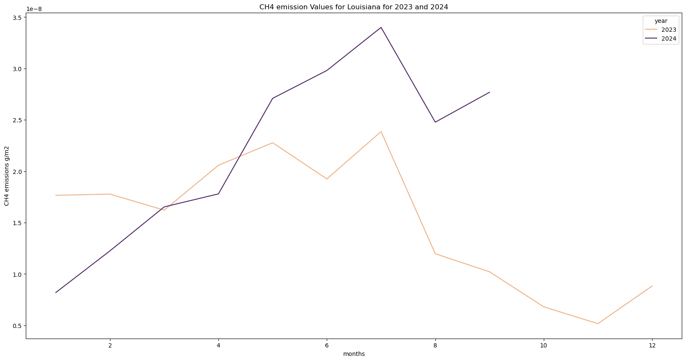
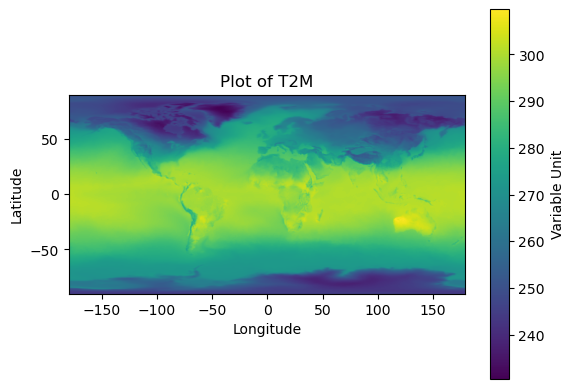
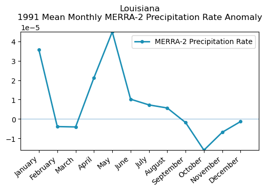
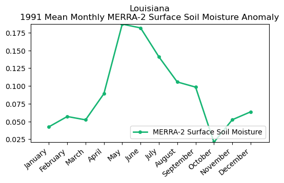
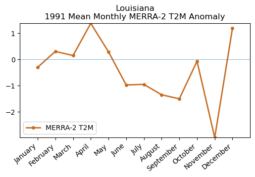

# import earthaccess
import os
import requests
import pandas as pd
os.environ['USE_PYGEOS'] = '0'
import folium
import folium.plugins
import seaborn as sns
import glob
import numpy as np
import netCDF4 as nc
import matplotlib.pyplot as plt
import branca.colormap as cm
from folium import TileLayer
from pystac_client import Client
from datetime import datetimeInteractive Session: Complementing anthropogenic GHG emissions with natural GHG emissions and fluxes
About the Data
Methane (CH₄) emissions from vegetated wetlands are estimated to be the largest natural source of methane in the global CH₄ budget, contributing to roughly one third of the total of natural and anthropogenic emissions. Wetland CH₄ is produced by microbes breaking down organic matter in the oxygen deprived environment of inundated soils. Due to limited data availability, the details of the role of wetland CH₄ emissions have thus far been underrepresented. Using the Earth Observation SIMulator version (LPJ-EOSIM) of the Lund-Potsdam-Jena Dynamic Global Vegetation Model (LPJ-DGVM) global CH₄ emissions from wetlands are estimated at 0.5 x 0.5 degree spatial resolution. By simulating wetland extent and using characteristics of inundated areas, such as wetland soil moisture, temperature, and carbon content, the model provides estimates of CH₄ quantities emitted into the atmosphere. The LPJ-EOSIM Wetland Methane Emissions dataset consists of global daily and monthly model estimates of terrestrial wetland methane emissions from 1990 to the present, with data added every two months. The monthly dataset is computed by summing the daily data for each month. The estimates are regularly used in conjunction with NASA’s Goddard Earth Observing System (GEOS) model to simulate the impact of wetlands and other methane sources on atmospheric methane concentrations, to compare against satellite and airborne data, and to improve understanding and prediction of wetland emissions. This is a new version and replaces the LPJ-wsl dataset previously available in the GHG Center.
Requirements
- Set up Python Environment - See setup_instructions.md in the
/setup/folder
Learning Objectives
- How to use
U.S. GHG Center STAC Catalogto accessWetland Methane Emissions, LPJ-wsl Modeldata - How to visualize the dataset in an interactive map environment using
folium - How to plot time series for the dataset using the
statistics/endooint
Advanced - How to use earthaccess to find MERRA-2 data (optional) - How to plot time series for MERRA-2 variables and analyze the results
Approach
- Identify available dates and temporal frequency of observations for the given collection using the GHGC API
/stacendpoint. The collection processed in this notebook is the Wetland Methane Emissions, LPJ-wsl Model data product - Define the spatial region of interest
- Pass the STAC item into the raster API
/stac/tilejson.jsonendpoint - Using plugins from
foliumto visualize the dataset in a interactive map environment - Plot a time series chart for the dataset
Advanced
- Access the MERRA-2 data for different variables (precipitation rate, surface soil moisture)
- Plot monthly time series for MERRA-2 dataset and analyze them
Data
- Monthly LPJ Wetland CH4 Emissions (US GHG Center STAC)
Setup
Import the required Python libraries by running the next cell.
Querying the STAC API
Search for the LPJ Wetland Methane Emissions Data using the Raster API and its STAC collection name!
# Provide STAC and RASTER API (tiler) endpoints
STAC_API_URL = "http://earth.gov/ghgcenter/api/stac"
RASTER_API_URL = "https://earth.gov/ghgcenter/api/raster"
# defining the stac client
catalog = Client.open(STAC_API_URL)
# print all the available collections in the catalopg
print('>> Collections:')
for collection in catalog.get_collections():
print(f"{collection.title} - {collection.id}")>> Collections:
CarbonTracker-CH₄ Isotopic Methane Inverse Fluxes v2023 - ct-ch4-monthgrid-v2023
EMIT Methane Point Source Plume Complexes v1 - emit-ch4plume-v1
(Monthly) Wetland Methane Emissions, LPJ-wsl Model v1 - lpjwsl-wetlandch4-monthgrid-v1
Vulcan Fossil Fuel CO₂ Emissions v4.0 - vulcan-ffco2-yeargrid-v4
Geostationary Satellite Observations of Extreme and Transient Methane Emissions from Oil and Gas Infrastructure - goes-ch4plume-v1
ODIAC Fossil Fuel CO₂ Emissions v2023 - odiac-ffco2-monthgrid-v2023
TM5-4DVar Isotopic CH4 Inverse Fluxes - tm54dvar-ch4flux-monthgrid-v1
GRA²PES Greenhouse Gas and Air Quality Species v1 - gra2pes-ghg-monthgrid-v1
(Daily) MiCASA Land Carbon Flux v1 - micasa-carbonflux-daygrid-v1
SEDAC Gridded World Population Density v4.11 - sedac-popdensity-yeargrid5yr-v4.11
Vulcan Residential Fossil Fuel CO₂ Emissions v4.0 (Scope 2) - vulcan-ffco2-elc-res-yeargrid-v4
GOSAT-based Top-down Total and Natural Methane Emissions v1 - gosat-based-ch4budget-yeargrid-v1
TM5-4DVar Isotopic CH₄ Inverse Fluxes - tm54dvar-ch4flux-mask-monthgrid-v1
CASA-GFED3 Land Carbon Flux v3 - casagfed-carbonflux-monthgrid-v3
(Monthly Mean) MiCASA Land Carbon Flux v1 - micasa-carbonflux-monthgrid-v1
(Daily) Wetland Methane Emissions, LPJ-EOSIM Model v1 - lpjeosim-wetlandch4-daygrid-v1
(Monthly) Wetland Methane Emissions, LPJ-EOSIM Model v1 - lpjeosim-wetlandch4-monthgrid-v1
OCO-2 GEOS Column CO₂ Concentrations v10r - oco2geos-co2-daygrid-v10r
U.S. Gridded Anthropogenic Methane Emissions Inventory v2 Express Extension - epa-ch4emission-yeargrid-v2express
(Daily) Wetland Methane Emissions, LPJ-wsl Model v1 - lpjwsl-wetlandch4-daygrid-v1
Pilot top-down CO2 Budget constrained by the v10 OCO-2 MIP Version 1 mean for all the years - oco2-mip-meanco2budget-yeargrid-v1
OCO-2 MIP Top-down CO₂ Budgets v1 - oco2-mip-co2budget-yeargrid-v1
Air-Sea CO₂ Flux, ECCO-Darwin Model v5 - eccodarwin-co2flux-monthgrid-v5
ODIAC Fossil Fuel CO₂ Emissions v2022 - odiac-ffco2-monthgrid-v2022# Define the collection of interest
collection_id = "lpjeosim-wetlandch4-monthgrid-v1"# Fetching the collection from STAC collections using appropriate endpoint
# Using the Client module of pystac_client
catalog = Client.open(STAC_API_URL)
# Pick the collection
# Select LPJ Wetland Methane Emissions collection: browse item_assets, spatial and temporal extent
collection = catalog.get_collection(collection_id)
collection- type "Collection"
- id "lpjeosim-wetlandch4-monthgrid-v1"
- stac_version "1.0.0"
- description "Global, monthly estimates of methane (CH₄) emissions from terrestrial wetlands at 0.5 x 0.5 degree spatial resolution using the Earth Observation SIMulator version (LPJ-EOSIM) of the Lund-Potsdam-Jena Dynamic Global Vegetation Model (LPJ-DGVM). Methane emissions from vegetated wetlands are estimated to be the largest natural source of methane in the global CH₄ budget, contributing to roughly one third of the total of natural and anthropogenic emissions. Wetland CH₄ is produced by microbes breaking down organic matter in the oxygen deprived environment of inundated soils. Due to limited data availability, the details of the role of wetland CH₄ emissions have thus far been underrepresented. The LPJ-EOSIM model estimates wetland methane emissions by simulating wetland extent and using characteristics of these inundated areas such as soil moisture, temperature, and carbon content to estimate CH₄ quantities emitted into the atmosphere. Input climate forcing data comes from Modern-Era Retrospective analysis for Research and Applications Version 2 (MERRA-2) data and ECMWF Re-Analysis data (ERA5). An ensemble layer provides the result of the mean of the MERRA-2 and ERA5 layers. All data layers are in units of kilograms of methane per meter squared per second. The source data can be found at https://doi.org/10.5067/Community/LPJ-EOSIM/LPJ_EOSIM_L2_MCH4E.001 and https://doi.org/10.5067/Community/LPJ-EOSIM/LPJ_EOSIM_L2_MCH4E_LL.001."
links[] 4 items
0
- rel "items"
- href "https://earth.gov/ghgcenter/api/stac/collections/lpjeosim-wetlandch4-monthgrid-v1/items"
- type "application/geo+json"
1
- rel "parent"
- href "https://earth.gov/ghgcenter/api/stac/"
- type "application/json"
2
- rel "root"
- href "http://earth.gov/ghgcenter/api/stac"
- type "application/json"
- title "US GHG Center STAC API"
3
- rel "self"
- href "https://earth.gov/ghgcenter/api/stac/collections/lpjeosim-wetlandch4-monthgrid-v1"
- type "application/json"
stac_extensions[] 2 items
- 0 "https://stac-extensions.github.io/render/v1.0.0/schema.json"
- 1 "https://stac-extensions.github.io/item-assets/v1.0.0/schema.json"
renders
dashboard
assets[] 1 items
- 0 "ensemble-mean-ch4-wetlands-emissions"
rescale[] 1 items
0[] 2 items
- 0 0
- 1 3e-09
- colormap_name "magma"
era5-ch4-wetlands-emissions
assets[] 1 items
- 0 "era5-ch4-wetlands-emissions"
rescale[] 1 items
0[] 2 items
- 0 0
- 1 3e-09
- colormap_name "magma"
merra2-ch4-wetlands-emissions
assets[] 1 items
- 0 "merra2-ch4-wetlands-emissions"
rescale[] 1 items
0[] 2 items
- 0 0
- 1 3e-09
- colormap_name "magma"
ensemble-mean-ch4-wetlands-emissions
assets[] 1 items
- 0 "ensemble-mean-ch4-wetlands-emissions"
rescale[] 1 items
0[] 2 items
- 0 0
- 1 3e-09
- colormap_name "magma"
item_assets
era5-ch4-wetlands-emissions
- type "image/tiff; application=geotiff; profile=cloud-optimized"
roles[] 2 items
- 0 "data"
- 1 "layer"
- title "(Monthly) (ERA5) Wetland CH₄ Emissions LPJ-EOSIM Model"
- description "Monthly CH₄ from wetlands constructed using ERA5 climate forcing data input to the LPJ-EOSIM model."
merra2-ch4-wetlands-emissions
- type "image/tiff; application=geotiff; profile=cloud-optimized"
roles[] 2 items
- 0 "data"
- 1 "layer"
- title "(Monthly) (MERRA-2) Wetland CH₄ Emissions LPJ-EOSIM Model"
- description "Monthly CH₄ emissions from wetlands constructed using MERRA-2 climate forcing data input to the LPJ-EOSIM model."
ensemble-mean-ch4-wetlands-emissions
- type "image/tiff; application=geotiff; profile=cloud-optimized"
roles[] 2 items
- 0 "data"
- 1 "layer"
- title "(Monthly) Ensemble Mean Wetland CH₄ Emissions LPJ-EOSIM Model"
- description "Monthly CH₄ emissions from wetlands constructed using an ensemble of climate forcing data sources input to the LPJ-EOSIM model (mean of ERA5 and MERRA-2 layers)."
- dashboard:is_periodic True
- dashboard:time_density "month"
- title "(Monthly) Wetland Methane Emissions, LPJ-EOSIM Model v1"
extent
spatial
bbox[] 1 items
0[] 4 items
- 0 -180
- 1 -90
- 2 180
- 3 90
temporal
interval[] 1 items
0[] 2 items
- 0 "1990-01-01T00:00:00Z"
- 1 "2024-09-30T00:00:00Z"
- license "CC0-1.0"
providers[] 1 items
0
- name "NASA"
summaries
datetime[] 2 items
- 0 "1990-01-01T00:00:00Z"
- 1 "2024-09-30T00:00:00Z"
Here we are examining the contents of our collection under extent. We notice the data is available from January 1980 to September 2024. By looking at dashboard:time_density, we can see that these observations are collected monthly.
# Get items from this collection, examine temporal extent of each
items = list(collection.get_items())
print(f"Found {len(items)} items in {collection_id} collection.")Found 417 items in lpjeosim-wetlandch4-monthgrid-v1 collection.# Examining the first item in the collection
# Keep in mind that a list starts from 0, 1, 2,... therefore ‘[0]’ is referring to the first item in the list/collection
items[0]- type "Feature"
- stac_version "1.0.0"
- id "lpjeosim-wetlandch4-monthgrid-v1-202409"
properties
- end_datetime "2024-09-30T00:00:00+00:00"
- start_datetime "2024-09-01T00:00:00+00:00"
- datetime None
geometry
- type "Polygon"
coordinates[] 1 items
0[] 5 items
0[] 2 items
- 0 -180
- 1 -90
1[] 2 items
- 0 180
- 1 -90
2[] 2 items
- 0 180
- 1 90
3[] 2 items
- 0 -180
- 1 90
4[] 2 items
- 0 -180
- 1 -90
links[] 5 items
0
- rel "collection"
- href "https://earth.gov/ghgcenter/api/stac/collections/lpjeosim-wetlandch4-monthgrid-v1"
- type "application/json"
1
- rel "parent"
- href "https://earth.gov/ghgcenter/api/stac/collections/lpjeosim-wetlandch4-monthgrid-v1"
- type "application/json"
2
- rel "root"
- href "https://earth.gov/ghgcenter/api/stac/"
- type "application/json"
3
- rel "self"
- href "https://earth.gov/ghgcenter/api/stac/collections/lpjeosim-wetlandch4-monthgrid-v1/items/lpjeosim-wetlandch4-monthgrid-v1-202409"
- type "application/geo+json"
4
- rel "preview"
- href "https://earth.gov/ghgcenter/api/raster/collections/lpjeosim-wetlandch4-monthgrid-v1/items/lpjeosim-wetlandch4-monthgrid-v1-202409/map?assets=ensemble-mean-ch4-wetlands-emissions&rescale=0%2C3e-09&colormap_name=magma"
- type "text/html"
- title "Map of Item"
assets
era5-ch4-wetlands-emissions
- href "s3://lp-prod-protected/LPJ_EOSIM_L2_MCH4E_LL.001/LPJ_EOSIM_L2_MCH4E_LL_001_202409/LPJ_EOSIM_L2_MCH4E_LL_ERA5_001_202409.tif"
- type "image/tiff; application=geotiff"
- title "(Monthly) Wetland Methane Emissions, ERA5 LPJ-EOSIM Model v1"
- description "Methane emissions from wetlands in units of grams of methane per meter squared per month. ECMWF Re-Analysis (ERA5) as input to LPJ-EOSIM model."
proj:bbox[] 4 items
- 0 -180.0
- 1 -90.0
- 2 180.0
- 3 90.0
- proj:wkt2 "GEOGCS["WGS 84",DATUM["WGS_1984",SPHEROID["WGS 84",6378137,298.257223563,AUTHORITY["EPSG","7030"]],AUTHORITY["EPSG","6326"]],PRIMEM["Greenwich",0,AUTHORITY["EPSG","8901"]],UNIT["degree",0.0174532925199433,AUTHORITY["EPSG","9122"]],AXIS["Latitude",NORTH],AXIS["Longitude",EAST],AUTHORITY["EPSG","4326"]]"
proj:shape[] 2 items
- 0 360
- 1 720
raster:bands[] 1 items
0
- scale 1.0
- nodata -99999.0
- offset 0.0
- sampling "area"
- data_type "float32"
histogram
- max 2.652328578989227e-09
- min 0.0
- count 11
buckets[] 10 items
- 0 58788
- 1 2273
- 2 893
- 3 295
- 4 86
- 5 55
- 6 28
- 7 27
- 8 25
- 9 12
statistics
- mean 5.66190073532181e-11
- stddev 1.5782847879528068e-10
- maximum 2.652328578989227e-09
- minimum 0.0
- valid_percent 24.10570987654321
proj:geometry
- type "Polygon"
coordinates[] 1 items
0[] 5 items
0[] 2 items
- 0 -180.0
- 1 -90.0
1[] 2 items
- 0 180.0
- 1 -90.0
2[] 2 items
- 0 180.0
- 1 90.0
3[] 2 items
- 0 -180.0
- 1 90.0
4[] 2 items
- 0 -180.0
- 1 -90.0
proj:transform[] 9 items
- 0 0.5
- 1 0.0
- 2 -180.0
- 3 0.0
- 4 -0.5
- 5 90.0
- 6 0.0
- 7 0.0
- 8 1.0
roles[] 2 items
- 0 "data"
- 1 "layer"
merra2-ch4-wetlands-emissions
- href "s3://lp-prod-protected/LPJ_EOSIM_L2_MCH4E_LL.001/LPJ_EOSIM_L2_MCH4E_LL_001_202409/LPJ_EOSIM_L2_MCH4E_LL_MERRA2_001_202409.tif"
- type "image/tiff; application=geotiff"
- title "(Monthly) Wetland Methane Emissions, MERRA-2 LPJ-EOSIM Model v1"
- description "Methane emissions from wetlands in units of grams of methane per meter squared per month. Modern-Era Retrospective analysis for Research and Applications Version 2 (MERRA-2) data as input to LPJ-EOSIM model."
proj:bbox[] 4 items
- 0 -180.0
- 1 -90.0
- 2 180.0
- 3 90.0
- proj:wkt2 "GEOGCS["WGS 84",DATUM["WGS_1984",SPHEROID["WGS 84",6378137,298.257223563,AUTHORITY["EPSG","7030"]],AUTHORITY["EPSG","6326"]],PRIMEM["Greenwich",0,AUTHORITY["EPSG","8901"]],UNIT["degree",0.0174532925199433,AUTHORITY["EPSG","9122"]],AXIS["Latitude",NORTH],AXIS["Longitude",EAST],AUTHORITY["EPSG","4326"]]"
proj:shape[] 2 items
- 0 360
- 1 720
raster:bands[] 1 items
0
- scale 1.0
- nodata -99999.0
- offset 0.0
- sampling "area"
- data_type "float32"
histogram
- max 3.324015729333496e-09
- min 0.0
- count 11
buckets[] 10 items
- 0 59463
- 1 2085
- 2 645
- 3 117
- 4 49
- 5 24
- 6 26
- 7 28
- 8 27
- 9 18
statistics
- mean 6.103722626751041e-11
- stddev 1.7666511134050393e-10
- maximum 3.324015729333496e-09
- minimum 0.0
- valid_percent 24.10570987654321
proj:geometry
- type "Polygon"
coordinates[] 1 items
0[] 5 items
0[] 2 items
- 0 -180.0
- 1 -90.0
1[] 2 items
- 0 180.0
- 1 -90.0
2[] 2 items
- 0 180.0
- 1 90.0
3[] 2 items
- 0 -180.0
- 1 90.0
4[] 2 items
- 0 -180.0
- 1 -90.0
proj:transform[] 9 items
- 0 0.5
- 1 0.0
- 2 -180.0
- 3 0.0
- 4 -0.5
- 5 90.0
- 6 0.0
- 7 0.0
- 8 1.0
roles[] 2 items
- 0 "data"
- 1 "layer"
ensemble-mean-ch4-wetlands-emissions
- href "s3://lp-prod-protected/LPJ_EOSIM_L2_MCH4E_LL.001/LPJ_EOSIM_L2_MCH4E_LL_001_202409/LPJ_EOSIM_L2_MCH4E_LL_ensemble_mean_001_202409.tif"
- type "image/tiff; application=geotiff"
- title "(Monthly) Wetland Methane Emissions, Ensemble Mean LPJ-EOSIM Model v1"
- description "Methane emissions from wetlands in units of grams of methane per meter squared per month. Ensemble of multiple climate forcing data sources input to LPJ-EOSIM model."
proj:bbox[] 4 items
- 0 -180.0
- 1 -90.0
- 2 180.0
- 3 90.0
- proj:wkt2 "GEOGCS["WGS 84",DATUM["WGS_1984",SPHEROID["WGS 84",6378137,298.257223563,AUTHORITY["EPSG","7030"]],AUTHORITY["EPSG","6326"]],PRIMEM["Greenwich",0,AUTHORITY["EPSG","8901"]],UNIT["degree",0.0174532925199433,AUTHORITY["EPSG","9122"]],AXIS["Latitude",NORTH],AXIS["Longitude",EAST],AUTHORITY["EPSG","4326"]]"
proj:shape[] 2 items
- 0 360
- 1 720
raster:bands[] 1 items
0
- scale 1.0
- nodata -99999.0
- offset 0.0
- sampling "area"
- data_type "float32"
histogram
- max 2.8594921985813926e-09
- min 0.0
- count 11
buckets[] 10 items
- 0 58998
- 1 2236
- 2 843
- 3 206
- 4 59
- 5 38
- 6 29
- 7 30
- 8 23
- 9 20
statistics
- mean 5.882811499085084e-11
- stddev 1.6458567639187077e-10
- maximum 2.8594921985813926e-09
- minimum 0.0
- valid_percent 24.10570987654321
proj:geometry
- type "Polygon"
coordinates[] 1 items
0[] 5 items
0[] 2 items
- 0 -180.0
- 1 -90.0
1[] 2 items
- 0 180.0
- 1 -90.0
2[] 2 items
- 0 180.0
- 1 90.0
3[] 2 items
- 0 -180.0
- 1 90.0
4[] 2 items
- 0 -180.0
- 1 -90.0
proj:transform[] 9 items
- 0 0.5
- 1 0.0
- 2 -180.0
- 3 0.0
- 4 -0.5
- 5 90.0
- 6 0.0
- 7 0.0
- 8 1.0
roles[] 2 items
- 0 "data"
- 1 "layer"
rendered_preview
- href "https://earth.gov/ghgcenter/api/raster/collections/lpjeosim-wetlandch4-monthgrid-v1/items/lpjeosim-wetlandch4-monthgrid-v1-202409/preview.png?assets=ensemble-mean-ch4-wetlands-emissions&rescale=0%2C3e-09&colormap_name=magma"
- type "image/png"
- title "Rendered preview"
- rel "preview"
roles[] 1 items
- 0 "overview"
bbox[] 4 items
- 0 -180.0
- 1 -90.0
- 2 180.0
- 3 90.0
stac_extensions[] 2 items
- 0 "https://stac-extensions.github.io/raster/v1.1.0/schema.json"
- 1 "https://stac-extensions.github.io/projection/v1.1.0/schema.json"
- collection "lpjeosim-wetlandch4-monthgrid-v1"
Define the Spatial Region of Interest
For this example, our spatial region of interest (ROI) will be a region in the state of Louisiana (LA). In this example, we will create a rectangular ROI. The state of Louisiana encompasses a diverse range of non-tidal and tidal freshwater wetlands including palustrine, lacustrine, riverine, estuarine, and marine wetlands. These ecosystems cover roughly one-third of the state according to the U.S. Fish and Wildlife Service, making Louisiana an ideal site for monitoring the natural source of methane emissions.
# We create a area of interest (polygon) on which will be used later
boundaries={
'Global':[-180,180,-90,90],
'Louisiana': [-95.9,-87.50,28.7,33.5],
'CONUS':[-127.08,-63.87,23.55,49.19], # conus
'Florida':[-84.07,-79.14,24.85,30.5],
'Northeast':[-74.88,-69.81,40.48,42.88]
}
focus = 'Louisiana'
aoi = boundaries[focus]
louisiana_aoi = {
"type": "Feature",
"properties": {},
"geometry": {
"coordinates": [
[
[aoi[0], aoi[2]], # SW Bounding Coordinate
[aoi[0], aoi[3]], # NW Bounding Coordinate
[aoi[1], aoi[3]], # NE Bounding Coordinate
[aoi[1],aoi[2]], # SE Bounding Coordinate
[aoi[0], aoi[2]] # Closing the polygon at the SW Bounding Coordinate
]
],
"type": "Polygon",
},
}Opening and Exploring Wetland Methane Emissions Data Using the Raster API
In this notebook, we will explore the temporal impacts of methane emissions. We will visualize the outputs on a map using folium.
items[0].properties{'end_datetime': '2024-09-30T00:00:00+00:00',
'start_datetime': '2024-09-01T00:00:00+00:00',
'datetime': None}# To access the year value from each item more easily, this will let us query more explicitly by year and month (e.g., 2020-02)
items = {item.properties["start_datetime"][:7]: item for item in items}
# Set the asset value to the appropriate parameter
asset_name = 'ensemble-mean-ch4-wetlands-emissions'Visualizing CH₄ Emissions
# Let's define a colormap for the data layer
color_map = "magma"
# Set the minimum and maximum values to provide our upper and lower bounds
rescale_values = {'max': 0.000000003, 'min': 0.0}
new_date1, new_date2, new_date3 = '2021-05', '2021-06','2021-07'
# Reading the tiles from raster api
tile_date_1 = requests.get(
f"{RASTER_API_URL}/collections/{items[new_date1].collection_id}/items/{items[new_date1].id}/tilejson.json?"
f"&assets=ensemble-mean-ch4-wetlands-emissions"
f"&color_formula=gamma+r+1.05&colormap_name={color_map}"
f"&rescale={rescale_values['min']},{rescale_values['max']}",
).json()
tile_date_1
tile_date_2 = requests.get(
f"{RASTER_API_URL}/collections/{items[new_date2].collection_id}/items/{items[new_date2].id}/tilejson.json?"
f"&assets=ensemble-mean-ch4-wetlands-emissions"
f"&color_formula=gamma+r+1.05&colormap_name={color_map}"
f"&rescale={rescale_values['min']},{rescale_values['max']}",
).json()
tile_date_2
tile_date_3 = requests.get(
f"{RASTER_API_URL}/collections/{items[new_date3].collection_id}/items/{items[new_date3].id}/tilejson.json?"
f"&assets=ensemble-mean-ch4-wetlands-emissions"
f"&color_formula=gamma+r+1.05&colormap_name={color_map}"
f"&rescale={rescale_values['min']},{rescale_values['max']}",
).json()
tile_date_3
# Interactive visulaization
map_ = folium.Map(location=(30,-90), zoom_start=5)
# May 2021
tile1 = TileLayer(
tiles=tile_date_1["tiles"][0],
attr="GHG",
opacity=0.8,
name=new_date1
)
tile1.add_to(map_)
# June 2021
tile2 = TileLayer(
tiles=tile_date_2["tiles"][0],
attr="GHG",
opacity=0.8,
name=new_date2
)
tile2.add_to(map_)
# July 2021
tile3 = TileLayer(
tiles=tile_date_3["tiles"][0],
attr="GHG",
opacity=0.8,
name=new_date3
)
tile3.add_to(map_)
folium.GeoJson(louisiana_aoi, name="louisiana, USA").add_to(map_)
folium.LayerControl(collapsed=False,position='bottomleft').add_to(map_)
# Add legend
colormap = cm.LinearColormap(colors = ['#2c115f','#721f81','#b73779','#f1605d','#feb078'], vmin = 0, vmax = 0.000000003 )
colormap.caption = 'kg CH₄/m²/s'
svg_style = '<style>svg#legend {font-size: 14px; background-color: white;}</style>'
map_.get_root().header.add_child(folium.Element(svg_style))
map_.add_child(colormap)
# Visualizing the map
map_Make this Notebook Trusted to load map: File -> Trust Notebook
Generate Statistics and Time Series Line Plots for the Methane Emission based on observations collected in 2020 and 2021
# The bounding box should be passed to the geojson param as a geojson Feature or FeatureCollection
# The following function generates statistics for the assigned parameter
def generate_stats(item, geojson):
result = requests.post(
f"{RASTER_API_URL}/cog/statistics",
params={"url": item["assets"]["ensemble-mean-ch4-wetlands-emissions"]["href"]},
json=geojson,
).json()
return {
**result["properties"],
"datetime": item["properties"]["start_datetime"],
}With the function above, we can generate the statistics for the area of interest.
# Default value is to fetch the data for the past 2 years (2020, 2021). You can change the indices to fetch the values for years beyond that.
items_2020_2021 = catalog.search(
collections=[collection_id], # Specify the collection
datetime="2023-01-01/2024-12-31",
limit=24
)
list(items_2020_2021.items())
stats = [generate_stats(item.to_dict(), louisiana_aoi) for item in items_2020_2021.items()]
stats[{'statistics': {'b1': {'min': 0.0,
'max': 7.132343604610014e-10,
'mean': 2.118599046196934e-10,
'count': 130.67999267578125,
'sum': 2.7685850056968775e-08,
'std': 2.0593554777937545e-10,
'median': 1.4636314382698856e-10,
'majority': 0.0,
'minority': 4.222861210018136e-13,
'unique': 123.0,
'histogram': [[52.0, 13.0, 16.0, 9.0, 9.0, 8.0, 12.0, 2.0, 9.0, 3.0],
[0.0,
7.132343327054258e-11,
1.4264686654108516e-10,
2.1397029981162774e-10,
2.852937330821703e-10,
3.566171802305007e-10,
4.279405996232555e-10,
4.992640190160103e-10,
5.705874661643406e-10,
6.41910913312671e-10,
7.132343604610014e-10]],
'valid_percent': 78.24,
'masked_pixels': 37.0,
'valid_pixels': 133.0,
'percentile_2': 0.0,
'percentile_98': 6.507891447959935e-10}},
'datetime': '2024-09-01T00:00:00+00:00'},
{'statistics': {'b1': {'min': 0.0,
'max': 6.184625034322266e-10,
'mean': 1.8960663594747018e-10,
'count': 130.67999267578125,
'sum': 2.477779403875502e-08,
'std': 1.77204013477901e-10,
'median': 1.4411213888898544e-10,
'majority': 0.0,
'minority': 6.10660773250199e-13,
'unique': 123.0,
'histogram': [[47.0, 18.0, 13.0, 9.0, 10.0, 12.0, 8.0, 6.0, 5.0, 5.0],
[0.0,
6.184625034322266e-11,
1.2369250068644533e-10,
1.85538751029668e-10,
2.4738500137289066e-10,
3.092312517161133e-10,
3.71077502059336e-10,
4.3292375240255865e-10,
4.947700027457813e-10,
5.56616253089004e-10,
6.184625034322266e-10]],
'valid_percent': 78.24,
'masked_pixels': 37.0,
'valid_pixels': 133.0,
'percentile_2': 0.0,
'percentile_98': 5.98047888988873e-10}},
'datetime': '2024-08-01T00:00:00+00:00'},
{'statistics': {'b1': {'min': 0.0,
'max': 8.846140486795662e-10,
'mean': 2.6019233989593715e-10,
'count': 130.67999267578125,
'sum': 3.40019319367002e-08,
'std': 2.4473076967403227e-10,
'median': 1.8928493494829723e-10,
'majority': 0.0,
'minority': 8.78012235399489e-13,
'unique': 123.0,
'histogram': [[49.0, 17.0, 11.0, 11.0, 11.0, 13.0, 9.0, 4.0, 2.0, 6.0],
[0.0,
8.846140486795662e-11,
1.7692280973591323e-10,
2.6538421460386985e-10,
3.5384561947182647e-10,
4.423070243397831e-10,
5.307684292077397e-10,
6.192298340756963e-10,
7.076912389436529e-10,
7.961526438116096e-10,
8.846140486795662e-10]],
'valid_percent': 78.24,
'masked_pixels': 37.0,
'valid_pixels': 133.0,
'percentile_2': 0.0,
'percentile_98': 8.265613749003364e-10}},
'datetime': '2024-07-01T00:00:00+00:00'},
{'statistics': {'b1': {'min': 0.0,
'max': 7.182934802507646e-10,
'mean': 2.2809909516752214e-10,
'count': 130.67999267578125,
'sum': 2.9807988966013e-08,
'std': 1.9665176900272607e-10,
'median': 1.8981334559686758e-10,
'majority': 0.0,
'minority': 8.086615144869969e-13,
'unique': 123.0,
'histogram': [[44.0, 18.0, 9.0, 10.0, 12.0, 16.0, 12.0, 5.0, 3.0, 4.0],
[0.0,
7.182934802507646e-11,
1.436586960501529e-10,
2.1548804407522937e-10,
2.873173921003058e-10,
3.591467401253823e-10,
4.3097608815045874e-10,
5.028054639311108e-10,
5.746347842006116e-10,
6.464641044701125e-10,
7.182934802507646e-10]],
'valid_percent': 78.24,
'masked_pixels': 37.0,
'valid_pixels': 133.0,
'percentile_2': 0.0,
'percentile_98': 6.602335345107235e-10}},
'datetime': '2024-06-01T00:00:00+00:00'},
{'statistics': {'b1': {'min': 0.0,
'max': 6.787819750719848e-10,
'mean': 2.0734221284346432e-10,
'count': 130.67999267578125,
'sum': 2.709547963775094e-08,
'std': 1.7403887970624508e-10,
'median': 1.7276691188783388e-10,
'majority': 0.0,
'minority': 8.593028090302102e-13,
'unique': 123.0,
'histogram': [[44.0, 18.0, 6.0, 12.0, 18.0, 19.0, 9.0, 2.0, 2.0, 3.0],
[0.0,
6.78781961194197e-11,
1.357563922388394e-10,
2.036345814193652e-10,
2.715127844776788e-10,
3.393909875359924e-10,
4.072691628387304e-10,
4.75147365897044e-10,
5.430255689553576e-10,
6.109037720136712e-10,
6.787819750719848e-10]],
'valid_percent': 78.24,
'masked_pixels': 37.0,
'valid_pixels': 133.0,
'percentile_2': 0.0,
'percentile_98': 6.128238472236092e-10}},
'datetime': '2024-05-01T00:00:00+00:00'},
{'statistics': {'b1': {'min': 0.0,
'max': 3.80118742038249e-10,
'mean': 1.3620291006155583e-10,
'count': 130.67999267578125,
'sum': 1.7798996054807503e-08,
'std': 1.118060414656115e-10,
'median': 1.2146435246496168e-10,
'majority': 0.0,
'minority': 4.761354071430857e-13,
'unique': 123.0,
'histogram': [[39.0, 19.0, 7.0, 6.0, 10.0, 17.0, 16.0, 11.0, 5.0, 3.0],
[0.0,
3.801187489771429e-11,
7.602374979542859e-11,
1.1403562816258983e-10,
1.5204749959085717e-10,
1.900593710191245e-10,
2.2807125632517966e-10,
2.66083127753447e-10,
3.0409499918171434e-10,
3.421068706099817e-10,
3.80118742038249e-10]],
'valid_percent': 78.24,
'masked_pixels': 37.0,
'valid_pixels': 133.0,
'percentile_2': 0.0,
'percentile_98': 3.5240482754161917e-10}},
'datetime': '2024-04-01T00:00:00+00:00'},
{'statistics': {'b1': {'min': 0.0,
'max': 3.944397863886451e-10,
'mean': 1.2651549252673533e-10,
'count': 130.67999267578125,
'sum': 1.6533043378785806e-08,
'std': 1.0963319550112411e-10,
'median': 1.1105295155688921e-10,
'majority': 0.0,
'minority': 3.442226972211193e-13,
'unique': 123.0,
'histogram': [[45.0, 17.0, 9.0, 10.0, 8.0, 16.0, 12.0, 11.0, 4.0, 1.0],
[0.0,
3.94439793327539e-11,
7.88879586655078e-11,
1.1833194146770865e-10,
1.577759173310156e-10,
1.9721989319432254e-10,
2.366638829354173e-10,
2.7610785879872424e-10,
3.155518346620312e-10,
3.5499581052533813e-10,
3.944397863886451e-10]],
'valid_percent': 78.24,
'masked_pixels': 37.0,
'valid_pixels': 133.0,
'percentile_2': 0.0,
'percentile_98': 3.431906980821964e-10}},
'datetime': '2024-03-01T00:00:00+00:00'},
{'statistics': {'b1': {'min': 0.0,
'max': 2.7563712423628317e-10,
'mean': 9.379733101333443e-11,
'count': 130.67999267578125,
'sum': 1.2257434178764015e-08,
'std': 8.004881243580111e-11,
'median': 7.658934597642997e-11,
'majority': 0.0,
'minority': 3.1415061524375787e-13,
'unique': 123.0,
'histogram': [[44.0, 17.0, 8.0, 8.0, 10.0, 13.0, 16.0, 10.0, 4.0, 3.0],
[0.0,
2.7563711729738927e-11,
5.5127423459477853e-11,
8.269113171976983e-11,
1.1025484691895571e-10,
1.3781856211814159e-10,
1.6538226343953966e-10,
1.9294597863872553e-10,
2.2050969383791141e-10,
2.480733951593095e-10,
2.7563712423628317e-10]],
'valid_percent': 78.24,
'masked_pixels': 37.0,
'valid_pixels': 133.0,
'percentile_2': 0.0,
'percentile_98': 2.5672683423572096e-10}},
'datetime': '2024-02-01T00:00:00+00:00'},
{'statistics': {'b1': {'min': 0.0,
'max': 1.8498837184299788e-10,
'mean': 6.271778929534122e-11,
'count': 130.67999267578125,
'sum': 8.195960354839826e-09,
'std': 5.6227171389765305e-11,
'median': 4.611678053323409e-11,
'majority': 0.0,
'minority': 2.0136186283919305e-13,
'unique': 123.0,
'histogram': [[44.0, 19.0, 8.0, 9.0, 10.0, 12.0, 9.0, 9.0, 7.0, 6.0],
[0.0,
1.8498837878189178e-11,
3.6997675756378356e-11,
5.5496513634567535e-11,
7.399535151275671e-11,
9.249419286039284e-11,
1.1099302726913507e-10,
1.294918616778773e-10,
1.4799070302551343e-10,
1.6648954437314956e-10,
1.8498837184299788e-10]],
'valid_percent': 78.24,
'masked_pixels': 37.0,
'valid_pixels': 133.0,
'percentile_2': 0.0,
'percentile_98': 1.7629417370379485e-10}},
'datetime': '2024-01-01T00:00:00+00:00'},
{'statistics': {'b1': {'min': 0.0,
'max': 1.8959664394024855e-10,
'mean': 6.758006654283832e-11,
'count': 130.67999267578125,
'sum': 8.831362308114876e-09,
'std': 5.944271938636335e-11,
'median': 5.070523168004826e-11,
'majority': 0.0,
'minority': 2.249650932120012e-13,
'unique': 123.0,
'histogram': [[42.0, 20.0, 7.0, 8.0, 10.0, 10.0, 9.0, 10.0, 11.0, 6.0],
[0.0,
1.8959663700135465e-11,
3.791932740027093e-11,
5.6878991100406395e-11,
7.583865480054186e-11,
9.479832197012428e-11,
1.1375798220081279e-10,
1.327176424315013e-10,
1.5167730960108372e-10,
1.7063697677066614e-10,
1.8959664394024855e-10]],
'valid_percent': 78.24,
'masked_pixels': 37.0,
'valid_pixels': 133.0,
'percentile_2': 0.0,
'percentile_98': 1.8533977130807955e-10}},
'datetime': '2023-12-01T00:00:00+00:00'},
{'statistics': {'b1': {'min': 0.0,
'max': 1.550822109619432e-10,
'mean': 3.954835764430342e-11,
'count': 130.67999267578125,
'sum': 5.168179217918123e-09,
'std': 3.639298345406092e-11,
'median': 3.3218053308026185e-11,
'majority': 0.0,
'minority': 3.009815975011515e-13,
'unique': 123.0,
'histogram': [[49.0, 17.0, 21.0, 16.0, 8.0, 8.0, 8.0, 2.0, 2.0, 2.0],
[0.0,
1.5508221443139014e-11,
3.101644288627803e-11,
4.652466606414052e-11,
6.203288577255606e-11,
7.75411054809716e-11,
9.304933212828104e-11,
1.0855755183669658e-10,
1.2406577154511211e-10,
1.3957399125352765e-10,
1.550822109619432e-10]],
'valid_percent': 78.24,
'masked_pixels': 37.0,
'valid_pixels': 133.0,
'percentile_2': 0.0,
'percentile_98': 1.3267530130089966e-10}},
'datetime': '2023-11-01T00:00:00+00:00'},
{'statistics': {'b1': {'min': 0.0,
'max': 2.394761888790953e-10,
'mean': 5.206990047468274e-11,
'count': 130.67999267578125,
'sum': 6.8044943013489956e-09,
'std': 5.08677539568072e-11,
'median': 3.982740526264905e-11,
'majority': 0.0,
'minority': 3.817946935165406e-13,
'unique': 123.0,
'histogram': [[53.0, 23.0, 20.0, 12.0, 12.0, 7.0, 0.0, 2.0, 3.0, 1.0],
[0.0,
2.3947618194020137e-11,
4.7895236388040274e-11,
7.184285111261346e-11,
9.579047277608055e-11,
1.1973809443954764e-10,
1.4368570222522692e-10,
1.67633323888694e-10,
1.915809455521611e-10,
2.1552856721562819e-10,
2.394761888790953e-10]],
'valid_percent': 78.24,
'masked_pixels': 37.0,
'valid_pixels': 133.0,
'percentile_2': 0.0,
'percentile_98': 1.9634933956513834e-10}},
'datetime': '2023-10-01T00:00:00+00:00'},
{'statistics': {'b1': {'min': 0.0,
'max': 2.678897659258439e-10,
'mean': 7.818427155692476e-11,
'count': 130.67999267578125,
'sum': 1.0217119594813084e-08,
'std': 6.939118594914437e-11,
'median': 6.068508195955502e-11,
'majority': 0.0,
'minority': 2.9818267538277154e-13,
'unique': 123.0,
'histogram': [[45.0, 18.0, 10.0, 16.0, 16.0, 8.0, 10.0, 4.0, 3.0, 3.0],
[0.0,
2.678897728647378e-11,
5.357795457294756e-11,
8.03669353288683e-11,
1.0715590914589512e-10,
1.3394488296292195e-10,
1.607338706577366e-10,
1.8752284447476342e-10,
2.1431181829179025e-10,
2.411008059866049e-10,
2.678897659258439e-10]],
'valid_percent': 78.24,
'masked_pixels': 37.0,
'valid_pixels': 133.0,
'percentile_2': 0.0,
'percentile_98': 2.4802093712139595e-10}},
'datetime': '2023-09-01T00:00:00+00:00'},
{'statistics': {'b1': {'min': 0.0,
'max': 3.480050136950297e-10,
'mean': 9.160354419446293e-11,
'count': 130.67999267578125,
'sum': 1.1970750612988468e-08,
'std': 8.458484567872906e-11,
'median': 7.115539407687166e-11,
'majority': 0.0,
'minority': 1.3938802640323794e-13,
'unique': 123.0,
'histogram': [[49.0, 18.0, 16.0, 15.0, 13.0, 7.0, 5.0, 6.0, 3.0, 1.0],
[0.0,
3.480050275728175e-11,
6.96010055145635e-11,
1.0440150827184524e-10,
1.39202011029127e-10,
1.7400250684751484e-10,
2.088030165436905e-10,
2.4360352623986614e-10,
2.78404022058254e-10,
3.1320451787664183e-10,
3.480050136950297e-10]],
'valid_percent': 78.24,
'masked_pixels': 37.0,
'valid_pixels': 133.0,
'percentile_2': 0.0,
'percentile_98': 2.9482316588058666e-10}},
'datetime': '2023-08-01T00:00:00+00:00'},
{'statistics': {'b1': {'min': 0.0,
'max': 5.883917242321957e-10,
'mean': 1.8260144785120502e-10,
'count': 130.67999267578125,
'sum': 2.3862355646997457e-08,
'std': 1.572677429933113e-10,
'median': 1.4394925529348512e-10,
'majority': 0.0,
'minority': 3.449705527746455e-13,
'unique': 123.0,
'histogram': [[43.0, 16.0, 13.0, 13.0, 11.0, 16.0, 7.0, 6.0, 6.0, 2.0],
[0.0,
5.8839169647662e-11,
1.17678339295324e-10,
1.76517508942986e-10,
2.35356678590648e-10,
2.941958343605222e-10,
3.53035017885972e-10,
4.1187420141142184e-10,
4.70713357181296e-10,
5.295525129511702e-10,
5.883917242321957e-10]],
'valid_percent': 78.24,
'masked_pixels': 37.0,
'valid_pixels': 133.0,
'percentile_2': 0.0,
'percentile_98': 4.99446872748166e-10}},
'datetime': '2023-07-01T00:00:00+00:00'},
{'statistics': {'b1': {'min': 0.0,
'max': 3.8672728908117904e-10,
'mean': 1.4732906561398806e-10,
'count': 130.67999267578125,
'sum': 1.9252961891425002e-08,
'std': 1.1903010552160407e-10,
'median': 1.4156920080665714e-10,
'majority': 0.0,
'minority': 5.371414034047173e-13,
'unique': 123.0,
'histogram': [[40.0, 14.0, 9.0, 6.0, 12.0, 16.0, 13.0, 8.0, 9.0, 6.0],
[0.0,
3.8672728214228513e-11,
7.734545642845703e-11,
1.1601818117323859e-10,
1.5469091285691405e-10,
1.9336364454058952e-10,
2.3203636234647718e-10,
2.7070909403015264e-10,
3.093818257138281e-10,
3.4805455739750357e-10,
3.8672728908117904e-10]],
'valid_percent': 78.24,
'masked_pixels': 37.0,
'valid_pixels': 133.0,
'percentile_2': 0.0,
'percentile_98': 3.844685958487304e-10}},
'datetime': '2023-06-01T00:00:00+00:00'},
{'statistics': {'b1': {'min': 0.0,
'max': 5.434121486125321e-10,
'mean': 1.7430591692235708e-10,
'count': 130.67999267578125,
'sum': 2.2778296582259827e-08,
'std': 1.457481498893906e-10,
'median': 1.527600268502738e-10,
'majority': 0.0,
'minority': 6.844108071078769e-13,
'unique': 123.0,
'histogram': [[42.0, 18.0, 10.0, 7.0, 11.0, 21.0, 15.0, 5.0, 1.0, 3.0],
[0.0,
5.43412155551426e-11,
1.086824311102852e-10,
1.6302365013487474e-10,
2.173648622205704e-10,
2.7170607430626603e-10,
3.260473002697495e-10,
3.803884984776573e-10,
4.347297244411408e-10,
4.890709504046242e-10,
5.434121486125321e-10]],
'valid_percent': 78.24,
'masked_pixels': 37.0,
'valid_pixels': 133.0,
'percentile_2': 0.0,
'percentile_98': 4.922700580500816e-10}},
'datetime': '2023-05-01T00:00:00+00:00'},
{'statistics': {'b1': {'min': 0.0,
'max': 4.0977246595907957e-10,
'mean': 1.5748916060154272e-10,
'count': 130.67999267578125,
'sum': 2.0580682047466325e-08,
'std': 1.2856153657780143e-10,
'median': 1.3827070044492018e-10,
'majority': 0.0,
'minority': 4.847948214745101e-13,
'unique': 123.0,
'histogram': [[40.0, 17.0, 7.0, 5.0, 11.0, 8.0, 18.0, 13.0, 11.0, 3.0],
[0.0,
4.0977245902018566e-11,
8.195449180403713e-11,
1.2293173423660875e-10,
1.6390898360807427e-10,
2.0488623297953978e-10,
2.458634684732175e-10,
2.86840717844683e-10,
3.2781796721614853e-10,
3.6879521658761405e-10,
4.0977246595907957e-10]],
'valid_percent': 78.24,
'masked_pixels': 37.0,
'valid_pixels': 133.0,
'percentile_2': 0.0,
'percentile_98': 3.983882390645732e-10}},
'datetime': '2023-04-01T00:00:00+00:00'},
{'statistics': {'b1': {'min': 0.0,
'max': 3.3039643243526484e-10,
'mean': 1.2406560501165842e-10,
'count': 130.67999267578125,
'sum': 1.6212892361977538e-08,
'std': 1.0005105812688471e-10,
'median': 1.1203143274185479e-10,
'majority': 0.0,
'minority': 4.300419612426887e-13,
'unique': 123.0,
'histogram': [[41.0, 14.0, 8.0, 9.0, 7.0, 13.0, 17.0, 15.0, 6.0, 3.0],
[0.0,
3.3039643937415875e-11,
6.607928787483175e-11,
9.911893528169458e-11,
1.321585757496635e-10,
1.6519821621763242e-10,
1.9823787056338915e-10,
2.3127751103135807e-10,
2.64317151499327e-10,
2.9735680584508373e-10,
3.3039643243526484e-10]],
'valid_percent': 78.24,
'masked_pixels': 37.0,
'valid_pixels': 133.0,
'percentile_2': 0.0,
'percentile_98': 2.9805016787953775e-10}},
'datetime': '2023-03-01T00:00:00+00:00'},
{'statistics': {'b1': {'min': 0.0,
'max': 3.805198933726217e-10,
'mean': 1.360428714125561e-10,
'count': 130.67999267578125,
'sum': 1.7778081229380405e-08,
'std': 1.189707634579173e-10,
'median': 1.1329107790780668e-10,
'majority': 0.0,
'minority': 3.500563283253405e-13,
'unique': 123.0,
'histogram': [[43.0, 17.0, 8.0, 12.0, 2.0, 15.0, 12.0, 9.0, 9.0, 6.0],
[0.0,
3.805198864337278e-11,
7.610397728674556e-11,
1.1415596246067139e-10,
1.5220795457349112e-10,
1.9025994668631085e-10,
2.2831192492134278e-10,
2.663639309119503e-10,
3.0441590914698224e-10,
3.4246788738201417e-10,
3.805198933726217e-10]],
'valid_percent': 78.24,
'masked_pixels': 37.0,
'valid_pixels': 133.0,
'percentile_2': 0.0,
'percentile_98': 3.6555508620139676e-10}},
'datetime': '2023-02-01T00:00:00+00:00'},
{'statistics': {'b1': {'min': 0.0,
'max': 3.880543664180891e-10,
'mean': 1.3511257390685927e-10,
'count': 130.67999267578125,
'sum': 1.765651092000553e-08,
'std': 1.1890780489534118e-10,
'median': 1.1112882142283453e-10,
'majority': 0.0,
'minority': 3.707341237387668e-13,
'unique': 123.0,
'histogram': [[44.0, 18.0, 9.0, 8.0, 6.0, 13.0, 15.0, 7.0, 6.0, 7.0],
[0.0,
3.880543802958769e-11,
7.761087605917538e-11,
1.1641632102765698e-10,
1.5522175211835076e-10,
1.9402718320904455e-10,
2.3283264205531395e-10,
2.7163807314600774e-10,
3.1044350423670153e-10,
3.492489353273953e-10,
3.880543664180891e-10]],
'valid_percent': 78.24,
'masked_pixels': 37.0,
'valid_pixels': 133.0,
'percentile_2': 0.0,
'percentile_98': 3.716609242587765e-10}},
'datetime': '2023-01-01T00:00:00+00:00'}]# Manipulating and cleaning the stats output from previous cell
def clean_stats(stats_json) -> pd.DataFrame:
df = pd.json_normalize(stats_json)
df.columns = [col.replace("statistics.b1.", "") for col in df.columns]
df["date"] = pd.to_datetime(df["datetime"])
return df
df = clean_stats(stats)
df.head(5)| datetime | min | max | mean | count | sum | std | median | majority | minority | unique | histogram | valid_percent | masked_pixels | valid_pixels | percentile_2 | percentile_98 | date | |
|---|---|---|---|---|---|---|---|---|---|---|---|---|---|---|---|---|---|---|
| 0 | 2024-09-01T00:00:00+00:00 | 0.0 | 7.132344e-10 | 2.118599e-10 | 130.679993 | 2.768585e-08 | 2.059355e-10 | 1.463631e-10 | 0.0 | 4.222861e-13 | 123.0 | [[52.0, 13.0, 16.0, 9.0, 9.0, 8.0, 12.0, 2.0, ... | 78.24 | 37.0 | 133.0 | 0.0 | 6.507891e-10 | 2024-09-01 00:00:00+00:00 |
| 1 | 2024-08-01T00:00:00+00:00 | 0.0 | 6.184625e-10 | 1.896066e-10 | 130.679993 | 2.477779e-08 | 1.772040e-10 | 1.441121e-10 | 0.0 | 6.106608e-13 | 123.0 | [[47.0, 18.0, 13.0, 9.0, 10.0, 12.0, 8.0, 6.0,... | 78.24 | 37.0 | 133.0 | 0.0 | 5.980479e-10 | 2024-08-01 00:00:00+00:00 |
| 2 | 2024-07-01T00:00:00+00:00 | 0.0 | 8.846140e-10 | 2.601923e-10 | 130.679993 | 3.400193e-08 | 2.447308e-10 | 1.892849e-10 | 0.0 | 8.780122e-13 | 123.0 | [[49.0, 17.0, 11.0, 11.0, 11.0, 13.0, 9.0, 4.0... | 78.24 | 37.0 | 133.0 | 0.0 | 8.265614e-10 | 2024-07-01 00:00:00+00:00 |
| 3 | 2024-06-01T00:00:00+00:00 | 0.0 | 7.182935e-10 | 2.280991e-10 | 130.679993 | 2.980799e-08 | 1.966518e-10 | 1.898133e-10 | 0.0 | 8.086615e-13 | 123.0 | [[44.0, 18.0, 9.0, 10.0, 12.0, 16.0, 12.0, 5.0... | 78.24 | 37.0 | 133.0 | 0.0 | 6.602335e-10 | 2024-06-01 00:00:00+00:00 |
| 4 | 2024-05-01T00:00:00+00:00 | 0.0 | 6.787820e-10 | 2.073422e-10 | 130.679993 | 2.709548e-08 | 1.740389e-10 | 1.727669e-10 | 0.0 | 8.593028e-13 | 123.0 | [[44.0, 18.0, 6.0, 12.0, 18.0, 19.0, 9.0, 2.0,... | 78.24 | 37.0 | 133.0 | 0.0 | 6.128238e-10 | 2024-05-01 00:00:00+00:00 |
df['year'] = pd.to_datetime(df['datetime']).dt.year
df['month'] = pd.to_datetime(df['datetime']).dt.month
df| datetime | min | max | mean | count | sum | std | median | majority | minority | unique | histogram | valid_percent | masked_pixels | valid_pixels | percentile_2 | percentile_98 | date | year | month | |
|---|---|---|---|---|---|---|---|---|---|---|---|---|---|---|---|---|---|---|---|---|
| 0 | 2024-09-01T00:00:00+00:00 | 0.0 | 7.132344e-10 | 2.118599e-10 | 130.679993 | 2.768585e-08 | 2.059355e-10 | 1.463631e-10 | 0.0 | 4.222861e-13 | 123.0 | [[52.0, 13.0, 16.0, 9.0, 9.0, 8.0, 12.0, 2.0, ... | 78.24 | 37.0 | 133.0 | 0.0 | 6.507891e-10 | 2024-09-01 00:00:00+00:00 | 2024 | 9 |
| 1 | 2024-08-01T00:00:00+00:00 | 0.0 | 6.184625e-10 | 1.896066e-10 | 130.679993 | 2.477779e-08 | 1.772040e-10 | 1.441121e-10 | 0.0 | 6.106608e-13 | 123.0 | [[47.0, 18.0, 13.0, 9.0, 10.0, 12.0, 8.0, 6.0,... | 78.24 | 37.0 | 133.0 | 0.0 | 5.980479e-10 | 2024-08-01 00:00:00+00:00 | 2024 | 8 |
| 2 | 2024-07-01T00:00:00+00:00 | 0.0 | 8.846140e-10 | 2.601923e-10 | 130.679993 | 3.400193e-08 | 2.447308e-10 | 1.892849e-10 | 0.0 | 8.780122e-13 | 123.0 | [[49.0, 17.0, 11.0, 11.0, 11.0, 13.0, 9.0, 4.0... | 78.24 | 37.0 | 133.0 | 0.0 | 8.265614e-10 | 2024-07-01 00:00:00+00:00 | 2024 | 7 |
| 3 | 2024-06-01T00:00:00+00:00 | 0.0 | 7.182935e-10 | 2.280991e-10 | 130.679993 | 2.980799e-08 | 1.966518e-10 | 1.898133e-10 | 0.0 | 8.086615e-13 | 123.0 | [[44.0, 18.0, 9.0, 10.0, 12.0, 16.0, 12.0, 5.0... | 78.24 | 37.0 | 133.0 | 0.0 | 6.602335e-10 | 2024-06-01 00:00:00+00:00 | 2024 | 6 |
| 4 | 2024-05-01T00:00:00+00:00 | 0.0 | 6.787820e-10 | 2.073422e-10 | 130.679993 | 2.709548e-08 | 1.740389e-10 | 1.727669e-10 | 0.0 | 8.593028e-13 | 123.0 | [[44.0, 18.0, 6.0, 12.0, 18.0, 19.0, 9.0, 2.0,... | 78.24 | 37.0 | 133.0 | 0.0 | 6.128238e-10 | 2024-05-01 00:00:00+00:00 | 2024 | 5 |
| 5 | 2024-04-01T00:00:00+00:00 | 0.0 | 3.801187e-10 | 1.362029e-10 | 130.679993 | 1.779900e-08 | 1.118060e-10 | 1.214644e-10 | 0.0 | 4.761354e-13 | 123.0 | [[39.0, 19.0, 7.0, 6.0, 10.0, 17.0, 16.0, 11.0... | 78.24 | 37.0 | 133.0 | 0.0 | 3.524048e-10 | 2024-04-01 00:00:00+00:00 | 2024 | 4 |
| 6 | 2024-03-01T00:00:00+00:00 | 0.0 | 3.944398e-10 | 1.265155e-10 | 130.679993 | 1.653304e-08 | 1.096332e-10 | 1.110530e-10 | 0.0 | 3.442227e-13 | 123.0 | [[45.0, 17.0, 9.0, 10.0, 8.0, 16.0, 12.0, 11.0... | 78.24 | 37.0 | 133.0 | 0.0 | 3.431907e-10 | 2024-03-01 00:00:00+00:00 | 2024 | 3 |
| 7 | 2024-02-01T00:00:00+00:00 | 0.0 | 2.756371e-10 | 9.379733e-11 | 130.679993 | 1.225743e-08 | 8.004881e-11 | 7.658935e-11 | 0.0 | 3.141506e-13 | 123.0 | [[44.0, 17.0, 8.0, 8.0, 10.0, 13.0, 16.0, 10.0... | 78.24 | 37.0 | 133.0 | 0.0 | 2.567268e-10 | 2024-02-01 00:00:00+00:00 | 2024 | 2 |
| 8 | 2024-01-01T00:00:00+00:00 | 0.0 | 1.849884e-10 | 6.271779e-11 | 130.679993 | 8.195960e-09 | 5.622717e-11 | 4.611678e-11 | 0.0 | 2.013619e-13 | 123.0 | [[44.0, 19.0, 8.0, 9.0, 10.0, 12.0, 9.0, 9.0, ... | 78.24 | 37.0 | 133.0 | 0.0 | 1.762942e-10 | 2024-01-01 00:00:00+00:00 | 2024 | 1 |
| 9 | 2023-12-01T00:00:00+00:00 | 0.0 | 1.895966e-10 | 6.758007e-11 | 130.679993 | 8.831362e-09 | 5.944272e-11 | 5.070523e-11 | 0.0 | 2.249651e-13 | 123.0 | [[42.0, 20.0, 7.0, 8.0, 10.0, 10.0, 9.0, 10.0,... | 78.24 | 37.0 | 133.0 | 0.0 | 1.853398e-10 | 2023-12-01 00:00:00+00:00 | 2023 | 12 |
| 10 | 2023-11-01T00:00:00+00:00 | 0.0 | 1.550822e-10 | 3.954836e-11 | 130.679993 | 5.168179e-09 | 3.639298e-11 | 3.321805e-11 | 0.0 | 3.009816e-13 | 123.0 | [[49.0, 17.0, 21.0, 16.0, 8.0, 8.0, 8.0, 2.0, ... | 78.24 | 37.0 | 133.0 | 0.0 | 1.326753e-10 | 2023-11-01 00:00:00+00:00 | 2023 | 11 |
| 11 | 2023-10-01T00:00:00+00:00 | 0.0 | 2.394762e-10 | 5.206990e-11 | 130.679993 | 6.804494e-09 | 5.086775e-11 | 3.982741e-11 | 0.0 | 3.817947e-13 | 123.0 | [[53.0, 23.0, 20.0, 12.0, 12.0, 7.0, 0.0, 2.0,... | 78.24 | 37.0 | 133.0 | 0.0 | 1.963493e-10 | 2023-10-01 00:00:00+00:00 | 2023 | 10 |
| 12 | 2023-09-01T00:00:00+00:00 | 0.0 | 2.678898e-10 | 7.818427e-11 | 130.679993 | 1.021712e-08 | 6.939119e-11 | 6.068508e-11 | 0.0 | 2.981827e-13 | 123.0 | [[45.0, 18.0, 10.0, 16.0, 16.0, 8.0, 10.0, 4.0... | 78.24 | 37.0 | 133.0 | 0.0 | 2.480209e-10 | 2023-09-01 00:00:00+00:00 | 2023 | 9 |
| 13 | 2023-08-01T00:00:00+00:00 | 0.0 | 3.480050e-10 | 9.160354e-11 | 130.679993 | 1.197075e-08 | 8.458485e-11 | 7.115539e-11 | 0.0 | 1.393880e-13 | 123.0 | [[49.0, 18.0, 16.0, 15.0, 13.0, 7.0, 5.0, 6.0,... | 78.24 | 37.0 | 133.0 | 0.0 | 2.948232e-10 | 2023-08-01 00:00:00+00:00 | 2023 | 8 |
| 14 | 2023-07-01T00:00:00+00:00 | 0.0 | 5.883917e-10 | 1.826014e-10 | 130.679993 | 2.386236e-08 | 1.572677e-10 | 1.439493e-10 | 0.0 | 3.449706e-13 | 123.0 | [[43.0, 16.0, 13.0, 13.0, 11.0, 16.0, 7.0, 6.0... | 78.24 | 37.0 | 133.0 | 0.0 | 4.994469e-10 | 2023-07-01 00:00:00+00:00 | 2023 | 7 |
| 15 | 2023-06-01T00:00:00+00:00 | 0.0 | 3.867273e-10 | 1.473291e-10 | 130.679993 | 1.925296e-08 | 1.190301e-10 | 1.415692e-10 | 0.0 | 5.371414e-13 | 123.0 | [[40.0, 14.0, 9.0, 6.0, 12.0, 16.0, 13.0, 8.0,... | 78.24 | 37.0 | 133.0 | 0.0 | 3.844686e-10 | 2023-06-01 00:00:00+00:00 | 2023 | 6 |
| 16 | 2023-05-01T00:00:00+00:00 | 0.0 | 5.434121e-10 | 1.743059e-10 | 130.679993 | 2.277830e-08 | 1.457481e-10 | 1.527600e-10 | 0.0 | 6.844108e-13 | 123.0 | [[42.0, 18.0, 10.0, 7.0, 11.0, 21.0, 15.0, 5.0... | 78.24 | 37.0 | 133.0 | 0.0 | 4.922701e-10 | 2023-05-01 00:00:00+00:00 | 2023 | 5 |
| 17 | 2023-04-01T00:00:00+00:00 | 0.0 | 4.097725e-10 | 1.574892e-10 | 130.679993 | 2.058068e-08 | 1.285615e-10 | 1.382707e-10 | 0.0 | 4.847948e-13 | 123.0 | [[40.0, 17.0, 7.0, 5.0, 11.0, 8.0, 18.0, 13.0,... | 78.24 | 37.0 | 133.0 | 0.0 | 3.983882e-10 | 2023-04-01 00:00:00+00:00 | 2023 | 4 |
| 18 | 2023-03-01T00:00:00+00:00 | 0.0 | 3.303964e-10 | 1.240656e-10 | 130.679993 | 1.621289e-08 | 1.000511e-10 | 1.120314e-10 | 0.0 | 4.300420e-13 | 123.0 | [[41.0, 14.0, 8.0, 9.0, 7.0, 13.0, 17.0, 15.0,... | 78.24 | 37.0 | 133.0 | 0.0 | 2.980502e-10 | 2023-03-01 00:00:00+00:00 | 2023 | 3 |
| 19 | 2023-02-01T00:00:00+00:00 | 0.0 | 3.805199e-10 | 1.360429e-10 | 130.679993 | 1.777808e-08 | 1.189708e-10 | 1.132911e-10 | 0.0 | 3.500563e-13 | 123.0 | [[43.0, 17.0, 8.0, 12.0, 2.0, 15.0, 12.0, 9.0,... | 78.24 | 37.0 | 133.0 | 0.0 | 3.655551e-10 | 2023-02-01 00:00:00+00:00 | 2023 | 2 |
| 20 | 2023-01-01T00:00:00+00:00 | 0.0 | 3.880544e-10 | 1.351126e-10 | 130.679993 | 1.765651e-08 | 1.189078e-10 | 1.111288e-10 | 0.0 | 3.707341e-13 | 123.0 | [[44.0, 18.0, 9.0, 8.0, 6.0, 13.0, 15.0, 7.0, ... | 78.24 | 37.0 | 133.0 | 0.0 | 3.716609e-10 | 2023-01-01 00:00:00+00:00 | 2023 | 1 |
Visualizing the Data as a Time Series
We can now plot the time-series of the wetland methane emissions for the state of Louisiana for the 2023-2024 (January - December) period.
fig = plt.figure(figsize=(20, 10))
# Set the plot elements
sns.lineplot(
df,
x = 'month',
y = 'sum',
hue= 'year',
palette='flare'
)
# Set the labels for the X and Y axis and assign a title for the plot
# plt.legend()
plt.xlabel("months")
plt.ylabel("CH4 emissions g/m2")
plt.title("CH4 emission Values for Louisiana for 2023 and 2024")Text(0.5, 1.0, 'CH4 emission Values for Louisiana for 2023 and 2024')
Generate Statistics and Time Series Lineplots for MERRA2 Data in Year 2020, 2021
Monthly MERRA-2 Precipitation RateDataset: MERRA2_400.tavgM_2d_flx_Nx Variable:
PRECTOThttps://disc.gsfc.nasa.gov/datasets/M2TMNXFLX_5.12.4/summaryMonthly MERRA-2 Surface Soil MoistureDataset: MERRA2_400.tavgM_2d_lnd_Nx Variable:
SFMCLong-term mean variable:GWETTOPhttps://disc.gsfc.nasa.gov/datasets/M2TMNXLND_5.12.4/summaryMonthly MERRA-2 T2MDataset: MERRA2_400.instM_2d_asm_Nx Variable:
T2Mhttps://disc.gsfc.nasa.gov/datasets/M2IMNXASM_5.12.4/summaryMERRA-2 Long-Term MeansMERRA2.tavgC_2d_ltm_Nx https://disc.gsfc.nasa.gov/datasets/M2TCNXLTM_1/summary
NASA Earth Data Login Credentials
To download or stream NASA data you will need an Earthdata account, you can create one here https://urs.earthdata.nasa.gov/home. We will use the login function from the earthaccess library for authentication before downloading at the end of the notebook. This function can also be used to create a local .netrc file if it doesn’t exist or add your login info to an existing .netrc file. If no Earthdata Login credentials are found in the .netrc you’ll be prompted for them. This step is not necessary to conduct searches but is needed to download or stream data.
# from netrc import netrc
# from subprocess import Popen
# from platform import system
# from getpass import getpass
# import os
# import requests
# import xarray as xr
# import s3fs
# import boto3
# import cartopy.crs as ccrs
# import cartopy.feature as cfeature
# import matplotlib.pyplot as plt
# import warnings
# from IPython.display import display, Markdown
# if (boto3.client('s3').meta.region_name == 'us-west-2'):
# display(Markdown('### us-west-2 Region Check: ✅'))
# else:
# display(Markdown('### us-west-2 Region Check: ❌'))
# raise ValueError('Your notebook is not running inside the AWS us-west-2 region, and will not be able to directly access NASA Earthdata S3 buckets')
# urs = 'urs.earthdata.nasa.gov' # Earthdata URL endpoint for authentication
# prompts = ['Enter NASA Earthdata Login Username: ',
# 'Enter NASA Earthdata Login Password: ']
# netrc_name = ".netrc"
# # Determine if netrc file exists, and if so, if it includes NASA Earthdata Login Credentials
# try:
# netrcDir = os.path.expanduser(f"~/{netrc_name}")
# # Check credentials against URS, and if username exists
# netrc(netrcDir).authenticators(urs)[0]
# # Below, create a netrc file and prompt user for NASA Earthdata Login Username and Password
# except FileNotFoundError:
# homeDir = os.path.expanduser("~")
# Popen('touch {0}{2} | echo machine {1} >> {0}{2}'.format(homeDir + os.sep, urs, netrc_name), shell=True)
# Popen('echo login {} >> {}{}'.format(getpass(prompt=prompts[0]), homeDir + os.sep, netrc_name), shell=True)
# Popen('echo \'password {} \'>> {}{}'.format(getpass(prompt=prompts[1]), homeDir + os.sep, netrc_name), shell=True)
# # Set restrictive permissions
# Popen('chmod 0600 {0}{1}'.format(homeDir + os.sep, netrc_name), shell=True)
# gesdisc_s3 = "https://data.gesdisc.earthdata.nasa.gov/s3credentials"
# # Define a function for S3 access credentials
# def begin_s3_direct_access(url: str=gesdisc_s3):
# response = requests.get(url).json()
# return s3fs.S3FileSystem(key=response['accessKeyId'],
# secret=response['secretAccessKey'],
# token=response['sessionToken'],
# client_kwargs={'region_name':'us-west-2'})
# fs = begin_s3_direct_access()# fn = 's3://gesdisc-cumulus-prod-protected/MERRA2/M2T1NXSLV.5.12.4/2019/03/MERRA2_400.tavg1_2d_slv_Nx.20190313.nc4'
# fs.info(fn)
# fs.ls('s3://gesdisc-cumulus-prod-protected/MERRA2/')Alternatively, load for MERRA-2 Data from existing folder
Opening and Exploring MERRA-2 Data
In this notebook, we will explore the MERRA-2 data. We will visualize the outputs on a map using folium.
data_dir = f"{os.getenv('HOME')}/shared/agu-2024/activity-1/"
merra_t2m_dir=f'{data_dir}/merra_t2m_dir/'
merra_soil_moisture_dir = f'{data_dir}/merra_soil_moisture_dir/'
merra_precip_rate_dir = f'{data_dir}/merra_precip_rate_dir/'
merra_t2m_clim_dir = f'{data_dir}/merra_t2m_clim_dir/'
merra_precip_rate_clim_dir = merra_t2m_clim_dir
merra_soil_moisture_clim_dir = merra_t2m_clim_dir## visualize MERRA-2
# [-95.9,-87.50,28.7,33.5]
# Insert the path to the NetCDF file
file_path = f'{data_dir}/merra_t2m_dir/MERRA2_100.instM_2d_asm_Nx.199101.nc4' # Replace with the path to your NetCDF file
dataset = nc.Dataset(file_path)
# Access coordinates (if needed)
latitude = dataset.variables['lat'][:]
longitude = dataset.variables['lon'][:]
# Access variables
variable_name = 'T2M' # Replace with the variable you want to plot
# dataset.variables['T2M'][0, 237:248, 135:150]
variable_data = dataset.variables['T2M'][0, :,:]
# Close the NetCDF file
# dataset.close()
# Plot the data
plt.imshow(variable_data, origin='lower', cmap='viridis', extent=(longitude.min(), longitude.max(), latitude.min(), latitude.max()))
plt.colorbar(label='Variable Unit')
plt.xlabel('Longitude')
plt.ylabel('Latitude')
plt.title(f'Plot of {variable_name}')
plt.show()
print('variables provided in this netcdf are:', dataset.variables)variables provided in this netcdf are: {'lon': <class 'netCDF4._netCDF4.Variable'>
float64 lon(lon)
long_name: longitude
units: degrees_east
vmax: 1000000000000000.0
vmin: -1000000000000000.0
valid_range: [-1.e+15 1.e+15]
unlimited dimensions:
current shape = (576,)
filling on, default _FillValue of 9.969209968386869e+36 used, 'lat': <class 'netCDF4._netCDF4.Variable'>
float64 lat(lat)
long_name: latitude
units: degrees_north
vmax: 1000000000000000.0
vmin: -1000000000000000.0
valid_range: [-1.e+15 1.e+15]
unlimited dimensions:
current shape = (361,)
filling on, default _FillValue of 9.969209968386869e+36 used, 'time': <class 'netCDF4._netCDF4.Variable'>
int32 time(time)
long_name: time
units: minutes since 1991-01-01 00:00:00
time_increment: 60000
begin_date: 19910101
begin_time: 0
vmax: 1000000000000000.0
vmin: -1000000000000000.0
valid_range: [-1.e+15 1.e+15]
unlimited dimensions: time
current shape = (1,)
filling on, default _FillValue of -2147483647 used, 'DISPH': <class 'netCDF4._netCDF4.Variable'>
float32 DISPH(time, lat, lon)
long_name: zero_plane_displacement_height
units: m
_FillValue: 1000000000000000.0
missing_value: 1000000000000000.0
fmissing_value: 1000000000000000.0
vmax: 1000000000000000.0
vmin: -1000000000000000.0
valid_range: [-1.e+15 1.e+15]
unlimited dimensions: time
current shape = (1, 361, 576)
filling on, 'PS': <class 'netCDF4._netCDF4.Variable'>
float32 PS(time, lat, lon)
long_name: surface_pressure
units: Pa
_FillValue: 1000000000000000.0
missing_value: 1000000000000000.0
fmissing_value: 1000000000000000.0
vmax: 1000000000000000.0
vmin: -1000000000000000.0
valid_range: [-1.e+15 1.e+15]
unlimited dimensions: time
current shape = (1, 361, 576)
filling on, 'QV10M': <class 'netCDF4._netCDF4.Variable'>
float32 QV10M(time, lat, lon)
long_name: 10-meter_specific_humidity
units: kg kg-1
_FillValue: 1000000000000000.0
missing_value: 1000000000000000.0
fmissing_value: 1000000000000000.0
vmax: 1000000000000000.0
vmin: -1000000000000000.0
valid_range: [-1.e+15 1.e+15]
unlimited dimensions: time
current shape = (1, 361, 576)
filling on, 'QV2M': <class 'netCDF4._netCDF4.Variable'>
float32 QV2M(time, lat, lon)
long_name: 2-meter_specific_humidity
units: kg kg-1
_FillValue: 1000000000000000.0
missing_value: 1000000000000000.0
fmissing_value: 1000000000000000.0
vmax: 1000000000000000.0
vmin: -1000000000000000.0
valid_range: [-1.e+15 1.e+15]
unlimited dimensions: time
current shape = (1, 361, 576)
filling on, 'SLP': <class 'netCDF4._netCDF4.Variable'>
float32 SLP(time, lat, lon)
long_name: sea_level_pressure
units: Pa
_FillValue: 1000000000000000.0
missing_value: 1000000000000000.0
fmissing_value: 1000000000000000.0
vmax: 1000000000000000.0
vmin: -1000000000000000.0
valid_range: [-1.e+15 1.e+15]
unlimited dimensions: time
current shape = (1, 361, 576)
filling on, 'T10M': <class 'netCDF4._netCDF4.Variable'>
float32 T10M(time, lat, lon)
long_name: 10-meter_air_temperature
units: K
_FillValue: 1000000000000000.0
missing_value: 1000000000000000.0
fmissing_value: 1000000000000000.0
vmax: 1000000000000000.0
vmin: -1000000000000000.0
valid_range: [-1.e+15 1.e+15]
unlimited dimensions: time
current shape = (1, 361, 576)
filling on, 'T2M': <class 'netCDF4._netCDF4.Variable'>
float32 T2M(time, lat, lon)
long_name: 2-meter_air_temperature
units: K
_FillValue: 1000000000000000.0
missing_value: 1000000000000000.0
fmissing_value: 1000000000000000.0
vmax: 1000000000000000.0
vmin: -1000000000000000.0
valid_range: [-1.e+15 1.e+15]
unlimited dimensions: time
current shape = (1, 361, 576)
filling on, 'TO3': <class 'netCDF4._netCDF4.Variable'>
float32 TO3(time, lat, lon)
long_name: total_column_ozone
units: Dobsons
_FillValue: 1000000000000000.0
missing_value: 1000000000000000.0
fmissing_value: 1000000000000000.0
vmax: 1000000000000000.0
vmin: -1000000000000000.0
valid_range: [-1.e+15 1.e+15]
unlimited dimensions: time
current shape = (1, 361, 576)
filling on, 'TOX': <class 'netCDF4._netCDF4.Variable'>
float32 TOX(time, lat, lon)
long_name: total_column_odd_oxygen
units: kg m-2
_FillValue: 1000000000000000.0
missing_value: 1000000000000000.0
fmissing_value: 1000000000000000.0
vmax: 1000000000000000.0
vmin: -1000000000000000.0
valid_range: [-1.e+15 1.e+15]
unlimited dimensions: time
current shape = (1, 361, 576)
filling on, 'TQI': <class 'netCDF4._netCDF4.Variable'>
float32 TQI(time, lat, lon)
long_name: total_precipitable_ice_water
units: kg m-2
_FillValue: 1000000000000000.0
missing_value: 1000000000000000.0
fmissing_value: 1000000000000000.0
vmax: 1000000000000000.0
vmin: -1000000000000000.0
valid_range: [-1.e+15 1.e+15]
unlimited dimensions: time
current shape = (1, 361, 576)
filling on, 'TQL': <class 'netCDF4._netCDF4.Variable'>
float32 TQL(time, lat, lon)
long_name: total_precipitable_liquid_water
units: kg m-2
_FillValue: 1000000000000000.0
missing_value: 1000000000000000.0
fmissing_value: 1000000000000000.0
vmax: 1000000000000000.0
vmin: -1000000000000000.0
valid_range: [-1.e+15 1.e+15]
unlimited dimensions: time
current shape = (1, 361, 576)
filling on, 'TQV': <class 'netCDF4._netCDF4.Variable'>
float32 TQV(time, lat, lon)
long_name: total_precipitable_water_vapor
units: kg m-2
_FillValue: 1000000000000000.0
missing_value: 1000000000000000.0
fmissing_value: 1000000000000000.0
vmax: 1000000000000000.0
vmin: -1000000000000000.0
valid_range: [-1.e+15 1.e+15]
unlimited dimensions: time
current shape = (1, 361, 576)
filling on, 'TROPPB': <class 'netCDF4._netCDF4.Variable'>
float32 TROPPB(time, lat, lon)
long_name: tropopause_pressure_based_on_blended_estimate
units: Pa
_FillValue: 1000000000000000.0
missing_value: 1000000000000000.0
fmissing_value: 1000000000000000.0
vmax: 1000000000000000.0
vmin: -1000000000000000.0
valid_range: [-1.e+15 1.e+15]
unlimited dimensions: time
current shape = (1, 361, 576)
filling on, 'TROPPT': <class 'netCDF4._netCDF4.Variable'>
float32 TROPPT(time, lat, lon)
long_name: tropopause_pressure_based_on_thermal_estimate
units: Pa
_FillValue: 1000000000000000.0
missing_value: 1000000000000000.0
fmissing_value: 1000000000000000.0
vmax: 1000000000000000.0
vmin: -1000000000000000.0
valid_range: [-1.e+15 1.e+15]
unlimited dimensions: time
current shape = (1, 361, 576)
filling on, 'TROPPV': <class 'netCDF4._netCDF4.Variable'>
float32 TROPPV(time, lat, lon)
long_name: tropopause_pressure_based_on_EPV_estimate
units: Pa
_FillValue: 1000000000000000.0
missing_value: 1000000000000000.0
fmissing_value: 1000000000000000.0
vmax: 1000000000000000.0
vmin: -1000000000000000.0
valid_range: [-1.e+15 1.e+15]
unlimited dimensions: time
current shape = (1, 361, 576)
filling on, 'TROPQ': <class 'netCDF4._netCDF4.Variable'>
float32 TROPQ(time, lat, lon)
long_name: tropopause_specific_humidity_using_blended_TROPP_estimate
units: kg kg-1
_FillValue: 1000000000000000.0
missing_value: 1000000000000000.0
fmissing_value: 1000000000000000.0
vmax: 1000000000000000.0
vmin: -1000000000000000.0
valid_range: [-1.e+15 1.e+15]
unlimited dimensions: time
current shape = (1, 361, 576)
filling on, 'TROPT': <class 'netCDF4._netCDF4.Variable'>
float32 TROPT(time, lat, lon)
long_name: tropopause_temperature_using_blended_TROPP_estimate
units: K
_FillValue: 1000000000000000.0
missing_value: 1000000000000000.0
fmissing_value: 1000000000000000.0
vmax: 1000000000000000.0
vmin: -1000000000000000.0
valid_range: [-1.e+15 1.e+15]
unlimited dimensions: time
current shape = (1, 361, 576)
filling on, 'TS': <class 'netCDF4._netCDF4.Variable'>
float32 TS(time, lat, lon)
long_name: surface_skin_temperature
units: K
_FillValue: 1000000000000000.0
missing_value: 1000000000000000.0
fmissing_value: 1000000000000000.0
vmax: 1000000000000000.0
vmin: -1000000000000000.0
valid_range: [-1.e+15 1.e+15]
unlimited dimensions: time
current shape = (1, 361, 576)
filling on, 'U10M': <class 'netCDF4._netCDF4.Variable'>
float32 U10M(time, lat, lon)
long_name: 10-meter_eastward_wind
units: m s-1
_FillValue: 1000000000000000.0
missing_value: 1000000000000000.0
fmissing_value: 1000000000000000.0
vmax: 1000000000000000.0
vmin: -1000000000000000.0
valid_range: [-1.e+15 1.e+15]
unlimited dimensions: time
current shape = (1, 361, 576)
filling on, 'U2M': <class 'netCDF4._netCDF4.Variable'>
float32 U2M(time, lat, lon)
long_name: 2-meter_eastward_wind
units: m s-1
_FillValue: 1000000000000000.0
missing_value: 1000000000000000.0
fmissing_value: 1000000000000000.0
vmax: 1000000000000000.0
vmin: -1000000000000000.0
valid_range: [-1.e+15 1.e+15]
unlimited dimensions: time
current shape = (1, 361, 576)
filling on, 'U50M': <class 'netCDF4._netCDF4.Variable'>
float32 U50M(time, lat, lon)
long_name: eastward_wind_at_50_meters
units: m s-1
_FillValue: 1000000000000000.0
missing_value: 1000000000000000.0
fmissing_value: 1000000000000000.0
vmax: 1000000000000000.0
vmin: -1000000000000000.0
valid_range: [-1.e+15 1.e+15]
unlimited dimensions: time
current shape = (1, 361, 576)
filling on, 'V10M': <class 'netCDF4._netCDF4.Variable'>
float32 V10M(time, lat, lon)
long_name: 10-meter_northward_wind
units: m s-1
_FillValue: 1000000000000000.0
missing_value: 1000000000000000.0
fmissing_value: 1000000000000000.0
vmax: 1000000000000000.0
vmin: -1000000000000000.0
valid_range: [-1.e+15 1.e+15]
unlimited dimensions: time
current shape = (1, 361, 576)
filling on, 'V2M': <class 'netCDF4._netCDF4.Variable'>
float32 V2M(time, lat, lon)
long_name: 2-meter_northward_wind
units: m s-1
_FillValue: 1000000000000000.0
missing_value: 1000000000000000.0
fmissing_value: 1000000000000000.0
vmax: 1000000000000000.0
vmin: -1000000000000000.0
valid_range: [-1.e+15 1.e+15]
unlimited dimensions: time
current shape = (1, 361, 576)
filling on, 'V50M': <class 'netCDF4._netCDF4.Variable'>
float32 V50M(time, lat, lon)
long_name: northward_wind_at_50_meters
units: m s-1
_FillValue: 1000000000000000.0
missing_value: 1000000000000000.0
fmissing_value: 1000000000000000.0
vmax: 1000000000000000.0
vmin: -1000000000000000.0
valid_range: [-1.e+15 1.e+15]
unlimited dimensions: time
current shape = (1, 361, 576)
filling on, 'Var_DISPH': <class 'netCDF4._netCDF4.Variable'>
float32 Var_DISPH(time, lat, lon)
long_name: Variance_of_DISPH
units: m m
_FillValue: 1000000000000000.0
missing_value: 1000000000000000.0
fmissing_value: 1000000000000000.0
vmax: 1000000000000000.0
vmin: -1000000000000000.0
valid_range: [-1.e+15 1.e+15]
unlimited dimensions: time
current shape = (1, 361, 576)
filling on, 'Var_PS': <class 'netCDF4._netCDF4.Variable'>
float32 Var_PS(time, lat, lon)
long_name: Variance_of_PS
units: Pa Pa
_FillValue: 1000000000000000.0
missing_value: 1000000000000000.0
fmissing_value: 1000000000000000.0
vmax: 1000000000000000.0
vmin: -1000000000000000.0
valid_range: [-1.e+15 1.e+15]
unlimited dimensions: time
current shape = (1, 361, 576)
filling on, 'Var_QV10M': <class 'netCDF4._netCDF4.Variable'>
float32 Var_QV10M(time, lat, lon)
long_name: Variance_of_QV10M
units: kg kg-1 kg kg-1
_FillValue: 1000000000000000.0
missing_value: 1000000000000000.0
fmissing_value: 1000000000000000.0
vmax: 1000000000000000.0
vmin: -1000000000000000.0
valid_range: [-1.e+15 1.e+15]
unlimited dimensions: time
current shape = (1, 361, 576)
filling on, 'Var_QV2M': <class 'netCDF4._netCDF4.Variable'>
float32 Var_QV2M(time, lat, lon)
long_name: Variance_of_QV2M
units: kg kg-1 kg kg-1
_FillValue: 1000000000000000.0
missing_value: 1000000000000000.0
fmissing_value: 1000000000000000.0
vmax: 1000000000000000.0
vmin: -1000000000000000.0
valid_range: [-1.e+15 1.e+15]
unlimited dimensions: time
current shape = (1, 361, 576)
filling on, 'Var_SLP': <class 'netCDF4._netCDF4.Variable'>
float32 Var_SLP(time, lat, lon)
long_name: Variance_of_SLP
units: Pa Pa
_FillValue: 1000000000000000.0
missing_value: 1000000000000000.0
fmissing_value: 1000000000000000.0
vmax: 1000000000000000.0
vmin: -1000000000000000.0
valid_range: [-1.e+15 1.e+15]
unlimited dimensions: time
current shape = (1, 361, 576)
filling on, 'Var_T10M': <class 'netCDF4._netCDF4.Variable'>
float32 Var_T10M(time, lat, lon)
long_name: Variance_of_T10M
units: K K
_FillValue: 1000000000000000.0
missing_value: 1000000000000000.0
fmissing_value: 1000000000000000.0
vmax: 1000000000000000.0
vmin: -1000000000000000.0
valid_range: [-1.e+15 1.e+15]
unlimited dimensions: time
current shape = (1, 361, 576)
filling on, 'Var_T2M': <class 'netCDF4._netCDF4.Variable'>
float32 Var_T2M(time, lat, lon)
long_name: Variance_of_T2M
units: K K
_FillValue: 1000000000000000.0
missing_value: 1000000000000000.0
fmissing_value: 1000000000000000.0
vmax: 1000000000000000.0
vmin: -1000000000000000.0
valid_range: [-1.e+15 1.e+15]
unlimited dimensions: time
current shape = (1, 361, 576)
filling on, 'Var_TO3': <class 'netCDF4._netCDF4.Variable'>
float32 Var_TO3(time, lat, lon)
long_name: Variance_of_TO3
units: Dobsons Dobsons
_FillValue: 1000000000000000.0
missing_value: 1000000000000000.0
fmissing_value: 1000000000000000.0
vmax: 1000000000000000.0
vmin: -1000000000000000.0
valid_range: [-1.e+15 1.e+15]
unlimited dimensions: time
current shape = (1, 361, 576)
filling on, 'Var_TOX': <class 'netCDF4._netCDF4.Variable'>
float32 Var_TOX(time, lat, lon)
long_name: Variance_of_TOX
units: kg m-2 kg m-2
_FillValue: 1000000000000000.0
missing_value: 1000000000000000.0
fmissing_value: 1000000000000000.0
vmax: 1000000000000000.0
vmin: -1000000000000000.0
valid_range: [-1.e+15 1.e+15]
unlimited dimensions: time
current shape = (1, 361, 576)
filling on, 'Var_TQI': <class 'netCDF4._netCDF4.Variable'>
float32 Var_TQI(time, lat, lon)
long_name: Variance_of_TQI
units: kg m-2 kg m-2
_FillValue: 1000000000000000.0
missing_value: 1000000000000000.0
fmissing_value: 1000000000000000.0
vmax: 1000000000000000.0
vmin: -1000000000000000.0
valid_range: [-1.e+15 1.e+15]
unlimited dimensions: time
current shape = (1, 361, 576)
filling on, 'Var_TQL': <class 'netCDF4._netCDF4.Variable'>
float32 Var_TQL(time, lat, lon)
long_name: Variance_of_TQL
units: kg m-2 kg m-2
_FillValue: 1000000000000000.0
missing_value: 1000000000000000.0
fmissing_value: 1000000000000000.0
vmax: 1000000000000000.0
vmin: -1000000000000000.0
valid_range: [-1.e+15 1.e+15]
unlimited dimensions: time
current shape = (1, 361, 576)
filling on, 'Var_TQV': <class 'netCDF4._netCDF4.Variable'>
float32 Var_TQV(time, lat, lon)
long_name: Variance_of_TQV
units: kg m-2 kg m-2
_FillValue: 1000000000000000.0
missing_value: 1000000000000000.0
fmissing_value: 1000000000000000.0
vmax: 1000000000000000.0
vmin: -1000000000000000.0
valid_range: [-1.e+15 1.e+15]
unlimited dimensions: time
current shape = (1, 361, 576)
filling on, 'Var_TROPPB': <class 'netCDF4._netCDF4.Variable'>
float32 Var_TROPPB(time, lat, lon)
long_name: Variance_of_TROPPB
units: Pa Pa
_FillValue: 1000000000000000.0
missing_value: 1000000000000000.0
fmissing_value: 1000000000000000.0
vmax: 1000000000000000.0
vmin: -1000000000000000.0
valid_range: [-1.e+15 1.e+15]
unlimited dimensions: time
current shape = (1, 361, 576)
filling on, 'Var_TROPPT': <class 'netCDF4._netCDF4.Variable'>
float32 Var_TROPPT(time, lat, lon)
long_name: Variance_of_TROPPT
units: Pa Pa
_FillValue: 1000000000000000.0
missing_value: 1000000000000000.0
fmissing_value: 1000000000000000.0
vmax: 1000000000000000.0
vmin: -1000000000000000.0
valid_range: [-1.e+15 1.e+15]
unlimited dimensions: time
current shape = (1, 361, 576)
filling on, 'Var_TROPPV': <class 'netCDF4._netCDF4.Variable'>
float32 Var_TROPPV(time, lat, lon)
long_name: Variance_of_TROPPV
units: Pa Pa
_FillValue: 1000000000000000.0
missing_value: 1000000000000000.0
fmissing_value: 1000000000000000.0
vmax: 1000000000000000.0
vmin: -1000000000000000.0
valid_range: [-1.e+15 1.e+15]
unlimited dimensions: time
current shape = (1, 361, 576)
filling on, 'Var_TROPQ': <class 'netCDF4._netCDF4.Variable'>
float32 Var_TROPQ(time, lat, lon)
long_name: Variance_of_TROPQ
units: kg kg-1 kg kg-1
_FillValue: 1000000000000000.0
missing_value: 1000000000000000.0
fmissing_value: 1000000000000000.0
vmax: 1000000000000000.0
vmin: -1000000000000000.0
valid_range: [-1.e+15 1.e+15]
unlimited dimensions: time
current shape = (1, 361, 576)
filling on, 'Var_TROPT': <class 'netCDF4._netCDF4.Variable'>
float32 Var_TROPT(time, lat, lon)
long_name: Variance_of_TROPT
units: K K
_FillValue: 1000000000000000.0
missing_value: 1000000000000000.0
fmissing_value: 1000000000000000.0
vmax: 1000000000000000.0
vmin: -1000000000000000.0
valid_range: [-1.e+15 1.e+15]
unlimited dimensions: time
current shape = (1, 361, 576)
filling on, 'Var_TS': <class 'netCDF4._netCDF4.Variable'>
float32 Var_TS(time, lat, lon)
long_name: Variance_of_TS
units: K K
_FillValue: 1000000000000000.0
missing_value: 1000000000000000.0
fmissing_value: 1000000000000000.0
vmax: 1000000000000000.0
vmin: -1000000000000000.0
valid_range: [-1.e+15 1.e+15]
unlimited dimensions: time
current shape = (1, 361, 576)
filling on, 'Var_U10M': <class 'netCDF4._netCDF4.Variable'>
float32 Var_U10M(time, lat, lon)
long_name: Variance_of_U10M
units: m s-1 m s-1
_FillValue: 1000000000000000.0
missing_value: 1000000000000000.0
fmissing_value: 1000000000000000.0
vmax: 1000000000000000.0
vmin: -1000000000000000.0
valid_range: [-1.e+15 1.e+15]
unlimited dimensions: time
current shape = (1, 361, 576)
filling on, 'Var_U2M': <class 'netCDF4._netCDF4.Variable'>
float32 Var_U2M(time, lat, lon)
long_name: Variance_of_U2M
units: m s-1 m s-1
_FillValue: 1000000000000000.0
missing_value: 1000000000000000.0
fmissing_value: 1000000000000000.0
vmax: 1000000000000000.0
vmin: -1000000000000000.0
valid_range: [-1.e+15 1.e+15]
unlimited dimensions: time
current shape = (1, 361, 576)
filling on, 'Var_U50M': <class 'netCDF4._netCDF4.Variable'>
float32 Var_U50M(time, lat, lon)
long_name: Variance_of_U50M
units: m s-1 m s-1
_FillValue: 1000000000000000.0
missing_value: 1000000000000000.0
fmissing_value: 1000000000000000.0
vmax: 1000000000000000.0
vmin: -1000000000000000.0
valid_range: [-1.e+15 1.e+15]
unlimited dimensions: time
current shape = (1, 361, 576)
filling on, 'Var_V10M': <class 'netCDF4._netCDF4.Variable'>
float32 Var_V10M(time, lat, lon)
long_name: Variance_of_V10M
units: m s-1 m s-1
_FillValue: 1000000000000000.0
missing_value: 1000000000000000.0
fmissing_value: 1000000000000000.0
vmax: 1000000000000000.0
vmin: -1000000000000000.0
valid_range: [-1.e+15 1.e+15]
unlimited dimensions: time
current shape = (1, 361, 576)
filling on, 'Var_V2M': <class 'netCDF4._netCDF4.Variable'>
float32 Var_V2M(time, lat, lon)
long_name: Variance_of_V2M
units: m s-1 m s-1
_FillValue: 1000000000000000.0
missing_value: 1000000000000000.0
fmissing_value: 1000000000000000.0
vmax: 1000000000000000.0
vmin: -1000000000000000.0
valid_range: [-1.e+15 1.e+15]
unlimited dimensions: time
current shape = (1, 361, 576)
filling on, 'Var_V50M': <class 'netCDF4._netCDF4.Variable'>
float32 Var_V50M(time, lat, lon)
long_name: Variance_of_V50M
units: m s-1 m s-1
_FillValue: 1000000000000000.0
missing_value: 1000000000000000.0
fmissing_value: 1000000000000000.0
vmax: 1000000000000000.0
vmin: -1000000000000000.0
valid_range: [-1.e+15 1.e+15]
unlimited dimensions: time
current shape = (1, 361, 576)
filling on}params={
'MERRA-2 T2M':
{'var':'T2M',
'cmap':'#000000',
'dir':merra_t2m_dir,
'nickname':'merra2_t2m',
'climdir':merra_t2m_clim_dir,
'climvar':'T2MMEAN'},
'MERRA-2 Surface Soil Moisture':
{'var':'GWETTOP',
'cmap':'#000000',
'dir':merra_soil_moisture_dir,
'nickname':'merra2_sm',
'climdir':merra_soil_moisture_clim_dir,
'climvar':'GWETTOP'},
'MERRA-2 Precipitation Rate':
{'var':'PRECTOT',
'cmap':'#000000',
'dir':merra_precip_rate_dir,
'nickname':'merra2_pr',
'climdir':merra_precip_rate_clim_dir,
'climvar':'PRECTOT'}
}
year=1991
anomaly = 1
param = ['MERRA-2 Precipitation Rate','MERRA-2 Surface Soil Moisture', 'MERRA-2 T2M' ]def get_merra2_timeseries(year,focus,p,anomaly):
files = glob.glob(params[p]['dir']+'*.nc4') # change the year for which you want to read the files
if anomaly:
try:
clim_files = glob.glob(params[p]['climdir']+'*.nc4')
except:
print('Climatological mean files (climdir) not found for specified parameter.')
breakpoint()
month_labels = []
box_totals = []
month_field = []
dt = []
for i,f in enumerate(files):
data = nc.Dataset(f)
# Get bounding box
wlat = np.logical_and(
data['lat'][:] < boundaries[focus][3],
data['lat'][:] > boundaries[focus][2]
)
wlon = np.logical_and(
data['lon'][:] < boundaries[focus][1],
data['lon'][:] > boundaries[focus][0]
)
datestamp = f.split('.')[-2]
month = int(datestamp[-2::])
dt.append(datetime(year,month,1))
month_labels.append(datetime(year,month,1).strftime('%B'))
if anomaly:
# Make sure you read the climatology for the right month (whichfile)
whichfile = [datetime(1991,month,1).strftime('%y%m')[1:] in f for f in clim_files] # Change the year for the data being used.
climdata = nc.Dataset(np.array(clim_files)[whichfile][0])
# Calculate sum (emissions) or mean (met params) over your bounding box
if 'LPJ' in p:
clim_box_total = np.nansum(climdata[params[p]['climvar']][0,wlat,wlon])
now_box_total = np.nansum(data[params[p]['var']][0,wlat,wlon])
elif 'MERRA' in p:
clim_box_total = np.nanmean(climdata[params[p]['climvar']][0,wlat,wlon])
now_box_total = np.nanmean(data[params[p]['var']][0,wlat,wlon])
# Replace fill values with NaN
# Otherwise differencing might give wild results? (Just be safe)
wfillclim = np.where(climdata[params[p]['climvar']][0,:,:] == climdata[params[p]['climvar']]._FillValue)
climfield = climdata[params[p]['climvar']][0,:,:]
climfield[wfillclim] = np.nan
wfillnow = np.where(data[params[p]['var']][0,:,:] == data[params[p]['var']]._FillValue)
nowfield = data[params[p]['var']][0,:,:]
nowfield[wfillnow] = np.nan
# And finally, difference current month and long-term mean
box_totals.append(now_box_total - clim_box_total)
month_field.append(nowfield - climfield)
climdata.close()
else:
if 'LPJ' in p:
box_totals.append(np.nansum(data[params[p]['var']][0,wlat,wlon]))
elif 'MERRA' in p:
box_totals.append(np.nanmean(data[params[p]['var']][0,wlat,wlon]))
# Replace fill values with NaN (otherwise maps are hard to read)
month_field.append(data[params[p]['var']][0,:,:])
wfill = np.where(month_field[-1] == data[params[p]['var']]._FillValue)
month_field[-1][wfill] = np.nan
#breakpoint()
# Sort in case months are out of order
dti = np.argsort(dt)
month_labels = np.array(month_labels)[dti]
box_totals = np.array(box_totals)[dti]
month_field = np.array(month_field)[dti]
# print('mean ',np.nanmean(month_field))
# print('std ',np.nanstd(month_field))
data_return = {
'month_labels':month_labels,
'box_totals':box_totals,
'month_fields':month_field,
'units':data[params[p]['var']].units,
'lat':data['lat'][:],
'lon':data['lon'][:],
'mean':np.nanmean(month_field),
'std' : np.nanstd(month_field)
}
data.close()
return data_return # List of color codes assigned
colors = ['#1B8FB5', '#16B573', '#C76B21']
for i,p in enumerate(param):
ts = get_merra2_timeseries(year,focus,p,anomaly)
print(f'Mean of variable {p} is {ts["mean"]}')
print(f'Standard deviation of variable {p} is {ts["std"]}')
# if i == 0:
fig= plt.figure(figsize=(6,3))
ax = fig.add_subplot(1,1,1)
#breakpoint()
try:
ax.plot(
list(range(0,12)),
ts['box_totals'],
linestyle='-',
linewidth=2,
color=colors[i],
markersize=4,
marker='o',
label=p
)
except ValueError:
print('Double check that you have all twelve months of MERRA-2 data downloaded!')
print(params[p]['dir'])
breakpoint()
# Construct plot title
title = '%s\n%s Mean Monthly %s'%(focus,year,p)
if anomaly:
title+=' Anomaly'
if 'LPJ' in p:
title = title.replace('Mean','Total')
plt.title(title)
plt.xticks(list(range(0,12)))
ax.set_xticklabels(ts['month_labels'],rotation=40,ha='right')
ax.legend(loc='best')
nickname = params[p]['nickname']
savename = 'box_summed_%s_%s_%s.png'% \
(nickname,year,focus)
if anomaly:
ax.plot(list(range(-1,13)),np.zeros(14),linewidth=0.4)
savename = savename.replace('.png','_Anomaly.png')
ax.set_xlim(-1,12)
ax.set_ylim(min(ts['box_totals']),max(ts['box_totals'])) # manual per parameter
plt.show()
plt.savefig(savename.split('/')[-1],dpi=300,bbox_inches='tight')Mean of variable MERRA-2 Precipitation Rate is -7.973682727424602e-07
Standard deviation of variable MERRA-2 Precipitation Rate is 1.885925667011179e-05
Mean of variable MERRA-2 Surface Soil Moisture is -0.00156168092507869
Standard deviation of variable MERRA-2 Surface Soil Moisture is 0.0329766683280468<Figure size 640x480 with 0 Axes>
Mean of variable MERRA-2 T2M is -0.08452282100915909
Standard deviation of variable MERRA-2 T2M is 1.4482206106185913<Figure size 640x480 with 0 Axes>
<Figure size 640x480 with 0 Axes>